Solution to Assignment 4#
We have provided a template to help get you started, as part of this assignment you will fill in the missing sections pertaining to the document
! pip install pandas networkx matplotlib torch plotly torch_geometric pkbar
Collecting pandas
Using cached pandas-2.2.3-cp311-cp311-manylinux_2_17_x86_64.manylinux2014_x86_64.whl.metadata (89 kB)
Collecting networkx
Using cached networkx-3.4.2-py3-none-any.whl.metadata (6.3 kB)
Collecting matplotlib
Using cached matplotlib-3.10.1-cp311-cp311-manylinux_2_17_x86_64.manylinux2014_x86_64.whl.metadata (11 kB)
Requirement already satisfied: torch in ./.local/lib/python3.11/site-packages (2.6.0)
Collecting plotly
Using cached plotly-6.0.1-py3-none-any.whl.metadata (6.7 kB)
Collecting torch_geometric
Using cached torch_geometric-2.6.1-py3-none-any.whl.metadata (63 kB)
Collecting pkbar
Using cached pkbar-0.5-py3-none-any.whl.metadata (3.8 kB)
Collecting numpy>=1.23.2 (from pandas)
Using cached numpy-2.2.5-cp311-cp311-manylinux_2_17_x86_64.manylinux2014_x86_64.whl.metadata (62 kB)
Requirement already satisfied: python-dateutil>=2.8.2 in /opt/conda/lib/python3.11/site-packages (from pandas) (2.9.0)
Requirement already satisfied: pytz>=2020.1 in /opt/conda/lib/python3.11/site-packages (from pandas) (2024.1)
Collecting tzdata>=2022.7 (from pandas)
Using cached tzdata-2025.2-py2.py3-none-any.whl.metadata (1.4 kB)
Collecting contourpy>=1.0.1 (from matplotlib)
Using cached contourpy-1.3.2-cp311-cp311-manylinux_2_17_x86_64.manylinux2014_x86_64.whl.metadata (5.5 kB)
Collecting cycler>=0.10 (from matplotlib)
Using cached cycler-0.12.1-py3-none-any.whl.metadata (3.8 kB)
Collecting fonttools>=4.22.0 (from matplotlib)
Using cached fonttools-4.57.0-cp311-cp311-manylinux_2_17_x86_64.manylinux2014_x86_64.whl.metadata (102 kB)
Collecting kiwisolver>=1.3.1 (from matplotlib)
Using cached kiwisolver-1.4.8-cp311-cp311-manylinux_2_17_x86_64.manylinux2014_x86_64.whl.metadata (6.2 kB)
Requirement already satisfied: packaging>=20.0 in /opt/conda/lib/python3.11/site-packages (from matplotlib) (24.0)
Collecting pillow>=8 (from matplotlib)
Using cached pillow-11.2.1-cp311-cp311-manylinux_2_28_x86_64.whl.metadata (8.9 kB)
Collecting pyparsing>=2.3.1 (from matplotlib)
Using cached pyparsing-3.2.3-py3-none-any.whl.metadata (5.0 kB)
Collecting filelock (from torch)
Using cached filelock-3.18.0-py3-none-any.whl.metadata (2.9 kB)
Requirement already satisfied: typing-extensions>=4.10.0 in ./.local/lib/python3.11/site-packages (from torch) (4.12.2)
Requirement already satisfied: jinja2 in /opt/conda/lib/python3.11/site-packages (from torch) (3.1.3)
Collecting fsspec (from torch)
Using cached fsspec-2025.3.2-py3-none-any.whl.metadata (11 kB)
Requirement already satisfied: nvidia-cuda-nvrtc-cu12==12.4.127 in ./.local/lib/python3.11/site-packages (from torch) (12.4.127)
Requirement already satisfied: nvidia-cuda-runtime-cu12==12.4.127 in ./.local/lib/python3.11/site-packages (from torch) (12.4.127)
Requirement already satisfied: nvidia-cuda-cupti-cu12==12.4.127 in ./.local/lib/python3.11/site-packages (from torch) (12.4.127)
Requirement already satisfied: nvidia-cudnn-cu12==9.1.0.70 in ./.local/lib/python3.11/site-packages (from torch) (9.1.0.70)
Requirement already satisfied: nvidia-cublas-cu12==12.4.5.8 in ./.local/lib/python3.11/site-packages (from torch) (12.4.5.8)
Requirement already satisfied: nvidia-cufft-cu12==11.2.1.3 in ./.local/lib/python3.11/site-packages (from torch) (11.2.1.3)
Requirement already satisfied: nvidia-curand-cu12==10.3.5.147 in ./.local/lib/python3.11/site-packages (from torch) (10.3.5.147)
Requirement already satisfied: nvidia-cusolver-cu12==11.6.1.9 in ./.local/lib/python3.11/site-packages (from torch) (11.6.1.9)
Requirement already satisfied: nvidia-cusparse-cu12==12.3.1.170 in ./.local/lib/python3.11/site-packages (from torch) (12.3.1.170)
Requirement already satisfied: nvidia-cusparselt-cu12==0.6.2 in ./.local/lib/python3.11/site-packages (from torch) (0.6.2)
Requirement already satisfied: nvidia-nccl-cu12==2.21.5 in ./.local/lib/python3.11/site-packages (from torch) (2.21.5)
Requirement already satisfied: nvidia-nvtx-cu12==12.4.127 in ./.local/lib/python3.11/site-packages (from torch) (12.4.127)
Requirement already satisfied: nvidia-nvjitlink-cu12==12.4.127 in ./.local/lib/python3.11/site-packages (from torch) (12.4.127)
Requirement already satisfied: triton==3.2.0 in ./.local/lib/python3.11/site-packages (from torch) (3.2.0)
Requirement already satisfied: sympy==1.13.1 in ./.local/lib/python3.11/site-packages (from torch) (1.13.1)
Collecting mpmath<1.4,>=1.1.0 (from sympy==1.13.1->torch)
Using cached mpmath-1.3.0-py3-none-any.whl.metadata (8.6 kB)
Collecting narwhals>=1.15.1 (from plotly)
Downloading narwhals-1.36.0-py3-none-any.whl.metadata (9.2 kB)
Collecting aiohttp (from torch_geometric)
Using cached aiohttp-3.11.18-cp311-cp311-manylinux_2_17_x86_64.manylinux2014_x86_64.whl.metadata (7.7 kB)
Requirement already satisfied: psutil>=5.8.0 in /opt/conda/lib/python3.11/site-packages (from torch_geometric) (5.9.8)
Requirement already satisfied: requests in /opt/conda/lib/python3.11/site-packages (from torch_geometric) (2.31.0)
Requirement already satisfied: tqdm in /opt/conda/lib/python3.11/site-packages (from torch_geometric) (4.66.2)
Requirement already satisfied: six>=1.5 in /opt/conda/lib/python3.11/site-packages (from python-dateutil>=2.8.2->pandas) (1.16.0)
Collecting aiohappyeyeballs>=2.3.0 (from aiohttp->torch_geometric)
Using cached aiohappyeyeballs-2.6.1-py3-none-any.whl.metadata (5.9 kB)
Collecting aiosignal>=1.1.2 (from aiohttp->torch_geometric)
Using cached aiosignal-1.3.2-py2.py3-none-any.whl.metadata (3.8 kB)
Requirement already satisfied: attrs>=17.3.0 in /opt/conda/lib/python3.11/site-packages (from aiohttp->torch_geometric) (23.2.0)
Collecting frozenlist>=1.1.1 (from aiohttp->torch_geometric)
Using cached frozenlist-1.6.0-cp311-cp311-manylinux_2_5_x86_64.manylinux1_x86_64.manylinux_2_17_x86_64.manylinux2014_x86_64.whl.metadata (16 kB)
Collecting multidict<7.0,>=4.5 (from aiohttp->torch_geometric)
Using cached multidict-6.4.3-cp311-cp311-manylinux_2_17_x86_64.manylinux2014_x86_64.whl.metadata (5.3 kB)
Collecting propcache>=0.2.0 (from aiohttp->torch_geometric)
Using cached propcache-0.3.1-cp311-cp311-manylinux_2_17_x86_64.manylinux2014_x86_64.whl.metadata (10 kB)
Collecting yarl<2.0,>=1.17.0 (from aiohttp->torch_geometric)
Using cached yarl-1.20.0-cp311-cp311-manylinux_2_17_x86_64.manylinux2014_x86_64.whl.metadata (72 kB)
Requirement already satisfied: MarkupSafe>=2.0 in /opt/conda/lib/python3.11/site-packages (from jinja2->torch) (2.1.5)
Requirement already satisfied: charset-normalizer<4,>=2 in /opt/conda/lib/python3.11/site-packages (from requests->torch_geometric) (3.3.2)
Requirement already satisfied: idna<4,>=2.5 in /opt/conda/lib/python3.11/site-packages (from requests->torch_geometric) (3.6)
Requirement already satisfied: urllib3<3,>=1.21.1 in /opt/conda/lib/python3.11/site-packages (from requests->torch_geometric) (2.2.1)
Requirement already satisfied: certifi>=2017.4.17 in /opt/conda/lib/python3.11/site-packages (from requests->torch_geometric) (2024.2.2)
Using cached pandas-2.2.3-cp311-cp311-manylinux_2_17_x86_64.manylinux2014_x86_64.whl (13.1 MB)
Using cached networkx-3.4.2-py3-none-any.whl (1.7 MB)
Using cached matplotlib-3.10.1-cp311-cp311-manylinux_2_17_x86_64.manylinux2014_x86_64.whl (8.6 MB)
Using cached plotly-6.0.1-py3-none-any.whl (14.8 MB)
Using cached torch_geometric-2.6.1-py3-none-any.whl (1.1 MB)
Using cached pkbar-0.5-py3-none-any.whl (9.2 kB)
Using cached contourpy-1.3.2-cp311-cp311-manylinux_2_17_x86_64.manylinux2014_x86_64.whl (326 kB)
Using cached cycler-0.12.1-py3-none-any.whl (8.3 kB)
Using cached fonttools-4.57.0-cp311-cp311-manylinux_2_17_x86_64.manylinux2014_x86_64.whl (4.9 MB)
Using cached kiwisolver-1.4.8-cp311-cp311-manylinux_2_17_x86_64.manylinux2014_x86_64.whl (1.4 MB)
Downloading narwhals-1.36.0-py3-none-any.whl (331 kB)
━━━━━━━━━━━━━━━━━━━━━━━━━━━━━━━━━━━━━━━━ 331.0/331.0 kB 11.4 MB/s eta 0:00:00
?25hUsing cached numpy-2.2.5-cp311-cp311-manylinux_2_17_x86_64.manylinux2014_x86_64.whl (16.4 MB)
Using cached pillow-11.2.1-cp311-cp311-manylinux_2_28_x86_64.whl (4.6 MB)
Using cached pyparsing-3.2.3-py3-none-any.whl (111 kB)
Using cached tzdata-2025.2-py2.py3-none-any.whl (347 kB)
Using cached aiohttp-3.11.18-cp311-cp311-manylinux_2_17_x86_64.manylinux2014_x86_64.whl (1.7 MB)
Using cached filelock-3.18.0-py3-none-any.whl (16 kB)
Using cached fsspec-2025.3.2-py3-none-any.whl (194 kB)
Using cached aiohappyeyeballs-2.6.1-py3-none-any.whl (15 kB)
Using cached aiosignal-1.3.2-py2.py3-none-any.whl (7.6 kB)
Using cached frozenlist-1.6.0-cp311-cp311-manylinux_2_5_x86_64.manylinux1_x86_64.manylinux_2_17_x86_64.manylinux2014_x86_64.whl (313 kB)
Using cached mpmath-1.3.0-py3-none-any.whl (536 kB)
Using cached multidict-6.4.3-cp311-cp311-manylinux_2_17_x86_64.manylinux2014_x86_64.whl (223 kB)
Using cached propcache-0.3.1-cp311-cp311-manylinux_2_17_x86_64.manylinux2014_x86_64.whl (232 kB)
Using cached yarl-1.20.0-cp311-cp311-manylinux_2_17_x86_64.manylinux2014_x86_64.whl (358 kB)
Installing collected packages: mpmath, tzdata, pyparsing, propcache, pillow, numpy, networkx, narwhals, multidict, kiwisolver, fsspec, frozenlist, fonttools, filelock, cycler, aiohappyeyeballs, yarl, plotly, pkbar, pandas, contourpy, aiosignal, matplotlib, aiohttp, torch_geometric
Successfully installed aiohappyeyeballs-2.6.1 aiohttp-3.11.18 aiosignal-1.3.2 contourpy-1.3.2 cycler-0.12.1 filelock-3.18.0 fonttools-4.57.0 frozenlist-1.6.0 fsspec-2025.3.2 kiwisolver-1.4.8 matplotlib-3.10.1 mpmath-1.3.0 multidict-6.4.3 narwhals-1.36.0 networkx-3.4.2 numpy-2.2.5 pandas-2.2.3 pillow-11.2.1 pkbar-0.5 plotly-6.0.1 propcache-0.3.1 pyparsing-3.2.3 torch_geometric-2.6.1 tzdata-2025.2 yarl-1.20.0
Q1. Load the dataset [5 points]#
We will be using the MNISTSuperPixels dataset. See the original paper here: https://arxiv.org/pdf/1611.08402
We will not be going into the depth they did here, rather just using their datasets to get a feel for implementing Graph Convolutional Neural Networks on a familiar dataset.
import torch
from torch_geometric.datasets import MNISTSuperpixels
from torch_geometric.loader import DataLoader
from torch_geometric.utils import to_networkx
import matplotlib.pyplot as plt
import networkx as nx
import random
# 1. Load the dataset
dataset = MNISTSuperpixels(root='/tmp/MNISTSuperpixels')
# 2. Shuffle and split
# Use a traditional splitting of 75/15/15 (train/val/test)
######### Your code here ##############
total_size = len(dataset)
train_size = int(0.75 * total_size)
val_size = int(0.15 * total_size)
test_size = total_size - train_size - val_size
# Shuffle the dataset
indices = list(range(total_size))
random.shuffle(indices)
train_indices = indices[:train_size]
val_indices = indices[train_size:train_size + val_size]
test_indices = indices[train_size + val_size:]
train_dataset = dataset[train_indices]
val_dataset = dataset[val_indices]
test_dataset = dataset[test_indices]
#######################################
print(f"Train: {len(train_dataset)} | Val: {len(val_dataset)} | Test: {len(test_dataset)}")
# 3. Create your dataloaders
# Create training, validation and testing dataloaders
# You can use any batch size you want - it may effect your peformance.
######### Your code here ##############
batch_size = 64
train_loader = DataLoader(train_dataset, batch_size=batch_size, shuffle=True)
val_loader = DataLoader(val_dataset, batch_size=batch_size, shuffle=False)
test_loader = DataLoader(test_dataset, batch_size=batch_size, shuffle=False)
#######################################
Downloading https://data.pyg.org/datasets/MNISTSuperpixels.zip
Extracting /tmp/MNISTSuperpixels/raw/MNISTSuperpixels.zip
Processing...
Done!
Train: 45000 | Val: 9000 | Test: 6000
Visualize the dataset#
We want to visualize the dataset you have just created. Recall that these are no longer “images”, but rather graph representations of MNIST.
You may want to run this a few times to see the different possible graphs that could occur.
def visualize_graph(data, title=None):
G = to_networkx(data, node_attrs=['x'], to_undirected=True)
# Extract 2D coordinates for layout (superpixel positions)
pos = {i: data.pos[i].numpy() for i in range(data.num_nodes)}
plt.figure(figsize=(4, 4))
nx.draw(G, pos, node_size=50, with_labels=False, node_color='skyblue')
if title:
plt.title(title)
plt.show()
#Pick some random samples to visualize
for i in range(3):
idx = random.randint(0, len(train_dataset)-1)
visualize_graph(train_dataset[idx], title=f"Label: {train_dataset[idx].y.item()}")
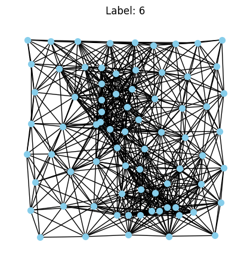
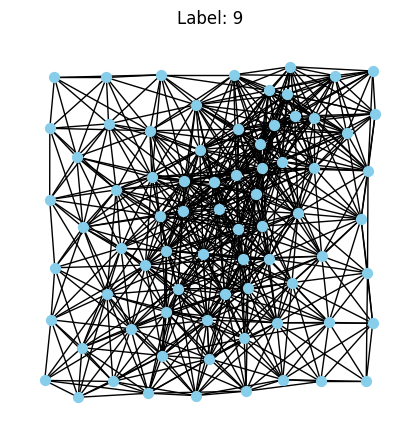
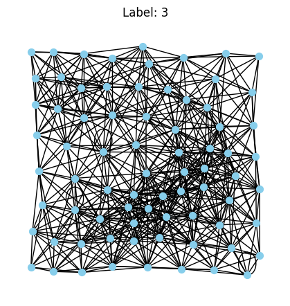
Q2. Create a basic GCN [20 points]#
We will use torch_geometric here. There are a few layers we are going to need:
GCNConv: Graph Convolutional Layer from
torch_geometric.nn.Global Mean Pooling: Aggregates node features to graph-level representation.
ReLU: Activation function after each layer (except the final one).
Linear: Fully connected layers for classification.
The network should take:
x: node features
edge_index: graph connectivity
batch: batch assignment vector (for pooling)
Input → GCNConv (input_dim → 128) → ReLU → GCNConv (128 → 64) → ReLU → GCNConv (64 → 128) → ReLU → Global Mean Pooling → Linear (128 → 64) → ReLU → Linear (64 → num_classes) → Output
Where output should be the raw logits (no final activation)
Instead of implementing the activation function as part of the class, i.e., self.activation = nn.ReLU() - directly apply it in the forward call:
As an example - self.fc(x).relu()
import torch.nn as nn
import torch.nn.functional as F
from torch_geometric.nn import GCNConv, global_mean_pool
class GCN(torch.nn.Module):
def __init__(self, input_dim, num_classes):
super(GCN, self).__init__()
# First GCN layer: input_dim -> 128
self.conv1 = GCNConv(input_dim, 128)
# Second GCN layer: 128 -> 64
self.conv2 = GCNConv(128, 64)
# Third GCN layer: 64 -> 128
self.conv3 = GCNConv(64, 128)
# Linear layers for classification
self.fc1 = nn.Linear(128, 64)
self.fc2 = nn.Linear(64, num_classes)
def forward(self, x, edge_index, batch):
# First GCN layer + ReLU
x = self.conv1(x, edge_index).relu()
# Second GCN layer + ReLU
x = self.conv2(x, edge_index).relu()
# Third GCN layer + ReLU
x = self.conv3(x, edge_index).relu()
# Global mean pooling (node features -> graph features)
x = global_mean_pool(x, batch)
# First fully connected layer + ReLU
x = self.fc1(x).relu()
# Second fully connected layer (output layer)
x = self.fc2(x)
return x
Q3. Implement the training procedure [30 points]#
You will implement the training procedure and the validation procedure. We have provided you some hints for different things you should be calculating in the training portion. For the validation portion, we leave this up to you entirely. Make sure the values that you are seeing during training make sense in terms of magnitude - i.e., divisions by number of batches or number of elements is correct. Feel free to change this however works for you.
The pkbar import is a handy package that makes pytorch trainings more akin to tensorflow’s .fit() function in terms of output.
The training function will return the trained model, along with a dictionary called history that can be used for plotting your metrics during training.
import pkbar
def trainer(net, train_loader, val_loader, num_epochs=100, lr=1e-3, device='cuda'):
# Setup random seed
torch.manual_seed(8)
torch.cuda.manual_seed(8)
history = {'train_loss':[], 'val_loss':[], 'train_acc':[], 'val_acc':[]}
print("Training Size: {0}".format(len(train_loader.dataset)))
print("Validation Size: {0}".format(len(val_loader.dataset)))
# Create your optimizer
optimizer = torch.optim.Adam(net.parameters(), lr=lr)
print('=========== Optimizer ==================:')
print(' LR:', lr)
print(' num_epochs:', num_epochs)
print('')
# Define your loss function, we are doing multiclass classification remember
CCE = torch.nn.CrossEntropyLoss()
for epoch in range(num_epochs):
# Progress bar setup
kbar = pkbar.Kbar(target=len(train_loader), epoch=epoch, num_epochs=num_epochs)
net.train() # Set the model to training mode
running_loss = 0.0
running_acc = 0.0
for i, data in enumerate(train_loader):
data = data.to(device) # Move data to the specified device (e.g., GPU)
optimizer.zero_grad()
# Forward pass of your models
logits = net(data.x, data.edge_index, data.batch)
# We want to monitor our accuracy during training
pred = logits.argmax(dim=1)
train_acc = pred.eq(data.y).sum().item() / data.num_graphs
# Calculate your loss
loss = CCE(logits, data.y)
# Backward pass and optimization
loss.backward()
optimizer.step()
# Note we have per batch, and running metrics
running_loss += loss.item() * data.num_graphs
running_acc += train_acc * data.num_graphs
kbar.update(i, values=[("loss", loss.item()),("acc:", train_acc)])
# Track training loss
history['train_loss'].append(running_loss / len(train_loader.dataset))
history['train_acc'].append(running_acc / len(train_loader.dataset))
######################
## Validation phase ##
######################
net.eval() # Set the model to evaluation mode
val_loss = 0.0
val_acc = 0.0
with torch.no_grad():
for i, data in enumerate(val_loader):
data = data.to(device) # Move data to the specified device (e.g., GPU)
# Forward pass
out = net(data.x, data.edge_index, data.batch)
# Compute validation metrics
loss = CCE(out, data.y)
val_loss += loss.item() * data.num_graphs
pred = out.argmax(dim=1)
val_acc += pred.eq(data.y).sum().item() / data.num_graphs * data.num_graphs
# Average validation loss and accuracy
val_loss /= len(val_loader.dataset)
val_acc /= len(val_loader.dataset)
# Track validation loss and accuracy
history['val_loss'].append(val_loss)
history['val_acc'].append(val_acc)
kbar.add(1, values=[("val_loss", val_loss),("val_acc:", val_acc)])
return net, history
# Instantiate and train your model
# What is your input size? How many classes do we have?
# Get a sample from the dataset to determine input dimension
sample = dataset[0]
input_dim = sample.x.size(1) # Features dimension
num_classes = 10 # MNIST has 10 classes (0-9)
device = torch.device('cuda' if torch.cuda.is_available() else 'cpu')
model = GCN(input_dim=input_dim, num_classes=num_classes).to(device)
model, history = trainer(model, train_loader, val_loader, num_epochs=100, lr=0.001, device=device)
Training Size: 45000
Validation Size: 9000
=========== Optimizer ==================:
LR: 0.001
num_epochs: 100
Epoch: 1/100
704/704 [==============================] - 10s 14ms/step - loss: 2.2409 - acc:: 0.1462 - val_loss: 2.1152 - val_acc:: 0.2160
Epoch: 2/100
704/704 [==============================] - 6s 8ms/step - loss: 1.9538 - acc:: 0.2658 - val_loss: 1.9276 - val_acc:: 0.2709
Epoch: 3/100
704/704 [==============================] - 6s 8ms/step - loss: 1.9229 - acc:: 0.2741 - val_loss: 1.9822 - val_acc:: 0.2496
Epoch: 4/100
704/704 [==============================] - 6s 8ms/step - loss: 1.9101 - acc:: 0.2806 - val_loss: 1.9336 - val_acc:: 0.2789
Epoch: 5/100
704/704 [==============================] - 6s 8ms/step - loss: 1.9043 - acc:: 0.2816 - val_loss: 1.8853 - val_acc:: 0.2771
Epoch: 6/100
704/704 [==============================] - 6s 8ms/step - loss: 1.9000 - acc:: 0.2839 - val_loss: 1.8891 - val_acc:: 0.2804
Epoch: 7/100
704/704 [==============================] - 6s 8ms/step - loss: 1.8873 - acc:: 0.2848 - val_loss: 1.8683 - val_acc:: 0.2851
Epoch: 8/100
704/704 [==============================] - 6s 8ms/step - loss: 1.8915 - acc:: 0.2850 - val_loss: 1.8813 - val_acc:: 0.2896
Epoch: 9/100
704/704 [==============================] - 6s 8ms/step - loss: 1.8757 - acc:: 0.2915 - val_loss: 1.8557 - val_acc:: 0.2961
Epoch: 10/100
704/704 [==============================] - 6s 8ms/step - loss: 1.8580 - acc:: 0.2993 - val_loss: 1.8466 - val_acc:: 0.3024
Epoch: 11/100
704/704 [==============================] - 6s 8ms/step - loss: 1.8394 - acc:: 0.3062 - val_loss: 1.8113 - val_acc:: 0.3198
Epoch: 12/100
704/704 [==============================] - 6s 9ms/step - loss: 1.8141 - acc:: 0.3169 - val_loss: 1.8521 - val_acc:: 0.3003
Epoch: 13/100
704/704 [==============================] - 6s 8ms/step - loss: 1.8035 - acc:: 0.3213 - val_loss: 1.7784 - val_acc:: 0.3228
Epoch: 14/100
704/704 [==============================] - 6s 8ms/step - loss: 1.7960 - acc:: 0.3249 - val_loss: 1.8020 - val_acc:: 0.3153
Epoch: 15/100
704/704 [==============================] - 6s 8ms/step - loss: 1.7848 - acc:: 0.3308 - val_loss: 1.7542 - val_acc:: 0.3424
Epoch: 16/100
704/704 [==============================] - 6s 8ms/step - loss: 1.7808 - acc:: 0.3331 - val_loss: 1.7966 - val_acc:: 0.3278
Epoch: 17/100
704/704 [==============================] - 6s 8ms/step - loss: 1.7743 - acc:: 0.3340 - val_loss: 1.7854 - val_acc:: 0.3300
Epoch: 18/100
704/704 [==============================] - 6s 9ms/step - loss: 1.7676 - acc:: 0.3382 - val_loss: 1.7451 - val_acc:: 0.3403
Epoch: 19/100
704/704 [==============================] - 6s 8ms/step - loss: 1.7718 - acc:: 0.3359 - val_loss: 1.7777 - val_acc:: 0.3293
Epoch: 20/100
704/704 [==============================] - 6s 8ms/step - loss: 1.7547 - acc:: 0.3449 - val_loss: 1.7685 - val_acc:: 0.3400
Epoch: 21/100
704/704 [==============================] - 6s 8ms/step - loss: 1.7484 - acc:: 0.3479 - val_loss: 1.7367 - val_acc:: 0.3547
Epoch: 22/100
704/704 [==============================] - 6s 9ms/step - loss: 1.7475 - acc:: 0.3504 - val_loss: 1.7197 - val_acc:: 0.3576
Epoch: 23/100
704/704 [==============================] - 6s 8ms/step - loss: 1.7371 - acc:: 0.3544 - val_loss: 1.8792 - val_acc:: 0.2998
Epoch: 24/100
704/704 [==============================] - 6s 8ms/step - loss: 1.7387 - acc:: 0.3578 - val_loss: 1.8108 - val_acc:: 0.3242
Epoch: 25/100
704/704 [==============================] - 6s 8ms/step - loss: 1.7248 - acc:: 0.3612 - val_loss: 1.7333 - val_acc:: 0.3532
Epoch: 26/100
704/704 [==============================] - 6s 8ms/step - loss: 1.7228 - acc:: 0.3619 - val_loss: 1.7171 - val_acc:: 0.3620
Epoch: 27/100
704/704 [==============================] - 6s 8ms/step - loss: 1.7138 - acc:: 0.3684 - val_loss: 1.7839 - val_acc:: 0.3481
Epoch: 28/100
704/704 [==============================] - 6s 8ms/step - loss: 1.7091 - acc:: 0.3712 - val_loss: 1.7299 - val_acc:: 0.3557
Epoch: 29/100
704/704 [==============================] - 6s 8ms/step - loss: 1.7029 - acc:: 0.3750 - val_loss: 1.7603 - val_acc:: 0.3370
Epoch: 30/100
704/704 [==============================] - 6s 8ms/step - loss: 1.6959 - acc:: 0.3771 - val_loss: 1.7837 - val_acc:: 0.3387
Epoch: 31/100
704/704 [==============================] - 6s 8ms/step - loss: 1.6929 - acc:: 0.3796 - val_loss: 1.6631 - val_acc:: 0.3848
Epoch: 32/100
704/704 [==============================] - 6s 8ms/step - loss: 1.6827 - acc:: 0.3829 - val_loss: 1.6727 - val_acc:: 0.3822
Epoch: 33/100
704/704 [==============================] - 6s 8ms/step - loss: 1.6778 - acc:: 0.3850 - val_loss: 1.7045 - val_acc:: 0.3696
Epoch: 34/100
704/704 [==============================] - 6s 8ms/step - loss: 1.6714 - acc:: 0.3864 - val_loss: 1.6471 - val_acc:: 0.3973
Epoch: 35/100
704/704 [==============================] - 6s 9ms/step - loss: 1.6536 - acc:: 0.3961 - val_loss: 1.6934 - val_acc:: 0.3747
Epoch: 36/100
704/704 [==============================] - 6s 8ms/step - loss: 1.6511 - acc:: 0.3947 - val_loss: 1.6249 - val_acc:: 0.4012
Epoch: 37/100
704/704 [==============================] - 6s 8ms/step - loss: 1.6496 - acc:: 0.3960 - val_loss: 1.6445 - val_acc:: 0.3888
Epoch: 38/100
704/704 [==============================] - 6s 8ms/step - loss: 1.6357 - acc:: 0.4014 - val_loss: 1.7219 - val_acc:: 0.3699
Epoch: 39/100
704/704 [==============================] - 6s 8ms/step - loss: 1.6265 - acc:: 0.4050 - val_loss: 1.8513 - val_acc:: 0.3296
Epoch: 40/100
704/704 [==============================] - 6s 8ms/step - loss: 1.6308 - acc:: 0.4040 - val_loss: 1.6464 - val_acc:: 0.3939
Epoch: 41/100
704/704 [==============================] - 6s 8ms/step - loss: 1.6099 - acc:: 0.4107 - val_loss: 1.6048 - val_acc:: 0.4121
Epoch: 42/100
704/704 [==============================] - 6s 8ms/step - loss: 1.6088 - acc:: 0.4125 - val_loss: 1.6030 - val_acc:: 0.4100
Epoch: 43/100
704/704 [==============================] - 6s 8ms/step - loss: 1.5966 - acc:: 0.4195 - val_loss: 1.5979 - val_acc:: 0.4141
Epoch: 44/100
704/704 [==============================] - 6s 8ms/step - loss: 1.5879 - acc:: 0.4189 - val_loss: 1.5536 - val_acc:: 0.4261
Epoch: 45/100
704/704 [==============================] - 6s 8ms/step - loss: 1.5878 - acc:: 0.4195 - val_loss: 1.5740 - val_acc:: 0.4207
Epoch: 46/100
704/704 [==============================] - 6s 8ms/step - loss: 1.5643 - acc:: 0.4321 - val_loss: 1.5788 - val_acc:: 0.4171
Epoch: 47/100
704/704 [==============================] - 6s 8ms/step - loss: 1.5655 - acc:: 0.4297 - val_loss: 1.6052 - val_acc:: 0.4024
Epoch: 48/100
704/704 [==============================] - 6s 8ms/step - loss: 1.5484 - acc:: 0.4371 - val_loss: 1.5740 - val_acc:: 0.4227
Epoch: 49/100
704/704 [==============================] - 6s 8ms/step - loss: 1.5432 - acc:: 0.4414 - val_loss: 1.5058 - val_acc:: 0.4530
Epoch: 50/100
704/704 [==============================] - 6s 8ms/step - loss: 1.5360 - acc:: 0.4429 - val_loss: 1.6150 - val_acc:: 0.4083
Epoch: 51/100
704/704 [==============================] - 6s 9ms/step - loss: 1.5293 - acc:: 0.4444 - val_loss: 1.5306 - val_acc:: 0.4366
Epoch: 52/100
704/704 [==============================] - 6s 8ms/step - loss: 1.5171 - acc:: 0.4506 - val_loss: 1.5438 - val_acc:: 0.4371
Epoch: 53/100
704/704 [==============================] - 6s 8ms/step - loss: 1.5151 - acc:: 0.4503 - val_loss: 1.5093 - val_acc:: 0.4524
Epoch: 54/100
704/704 [==============================] - 6s 8ms/step - loss: 1.5126 - acc:: 0.4515 - val_loss: 1.4977 - val_acc:: 0.4551
Epoch: 55/100
704/704 [==============================] - 6s 8ms/step - loss: 1.5048 - acc:: 0.4535 - val_loss: 1.5016 - val_acc:: 0.4506
Epoch: 56/100
704/704 [==============================] - 6s 8ms/step - loss: 1.4929 - acc:: 0.4592 - val_loss: 1.5352 - val_acc:: 0.4390
Epoch: 57/100
704/704 [==============================] - 6s 8ms/step - loss: 1.4967 - acc:: 0.4584 - val_loss: 1.4731 - val_acc:: 0.4562
Epoch: 58/100
704/704 [==============================] - 6s 8ms/step - loss: 1.4873 - acc:: 0.4643 - val_loss: 1.4852 - val_acc:: 0.4638
Epoch: 59/100
704/704 [==============================] - 6s 8ms/step - loss: 1.4840 - acc:: 0.4617 - val_loss: 1.6529 - val_acc:: 0.4064
Epoch: 60/100
704/704 [==============================] - 6s 8ms/step - loss: 1.4900 - acc:: 0.4590 - val_loss: 1.4477 - val_acc:: 0.4759
Epoch: 61/100
704/704 [==============================] - 6s 8ms/step - loss: 1.4807 - acc:: 0.4636 - val_loss: 1.4690 - val_acc:: 0.4649
Epoch: 62/100
704/704 [==============================] - 6s 8ms/step - loss: 1.4678 - acc:: 0.4663 - val_loss: 1.5178 - val_acc:: 0.4297
Epoch: 63/100
704/704 [==============================] - 6s 8ms/step - loss: 1.4682 - acc:: 0.4681 - val_loss: 1.5122 - val_acc:: 0.4534
Epoch: 64/100
704/704 [==============================] - 6s 8ms/step - loss: 1.4673 - acc:: 0.4701 - val_loss: 1.4663 - val_acc:: 0.4649
Epoch: 65/100
704/704 [==============================] - 6s 8ms/step - loss: 1.4659 - acc:: 0.4697 - val_loss: 1.4395 - val_acc:: 0.4769
Epoch: 66/100
704/704 [==============================] - 6s 8ms/step - loss: 1.4543 - acc:: 0.4731 - val_loss: 1.6516 - val_acc:: 0.4134
Epoch: 67/100
704/704 [==============================] - 6s 8ms/step - loss: 1.4555 - acc:: 0.4739 - val_loss: 1.4380 - val_acc:: 0.4742
Epoch: 68/100
704/704 [==============================] - 6s 8ms/step - loss: 1.4591 - acc:: 0.4706 - val_loss: 1.4814 - val_acc:: 0.4670
Epoch: 69/100
704/704 [==============================] - 6s 8ms/step - loss: 1.4520 - acc:: 0.4731 - val_loss: 1.4790 - val_acc:: 0.4630
Epoch: 70/100
704/704 [==============================] - 6s 8ms/step - loss: 1.4510 - acc:: 0.4746 - val_loss: 1.4298 - val_acc:: 0.4824
Epoch: 71/100
704/704 [==============================] - 6s 8ms/step - loss: 1.4505 - acc:: 0.4730 - val_loss: 1.4397 - val_acc:: 0.4744
Epoch: 72/100
704/704 [==============================] - 6s 8ms/step - loss: 1.4449 - acc:: 0.4750 - val_loss: 1.5053 - val_acc:: 0.4523
Epoch: 73/100
704/704 [==============================] - 6s 8ms/step - loss: 1.4391 - acc:: 0.4785 - val_loss: 1.4187 - val_acc:: 0.4833
Epoch: 74/100
704/704 [==============================] - 6s 8ms/step - loss: 1.4465 - acc:: 0.4766 - val_loss: 1.4089 - val_acc:: 0.4934
Epoch: 75/100
704/704 [==============================] - 6s 8ms/step - loss: 1.4398 - acc:: 0.4781 - val_loss: 1.5068 - val_acc:: 0.4461
Epoch: 76/100
704/704 [==============================] - 6s 8ms/step - loss: 1.4361 - acc:: 0.4796 - val_loss: 1.4511 - val_acc:: 0.4759
Epoch: 77/100
704/704 [==============================] - 6s 8ms/step - loss: 1.4351 - acc:: 0.4813 - val_loss: 1.4896 - val_acc:: 0.4640
Epoch: 78/100
704/704 [==============================] - 6s 8ms/step - loss: 1.4283 - acc:: 0.4839 - val_loss: 1.4486 - val_acc:: 0.4732
Epoch: 79/100
704/704 [==============================] - 6s 8ms/step - loss: 1.4317 - acc:: 0.4818 - val_loss: 1.4406 - val_acc:: 0.4783
Epoch: 80/100
704/704 [==============================] - 6s 8ms/step - loss: 1.4333 - acc:: 0.4813 - val_loss: 1.4387 - val_acc:: 0.4796
Epoch: 81/100
704/704 [==============================] - 6s 8ms/step - loss: 1.4292 - acc:: 0.4822 - val_loss: 1.3986 - val_acc:: 0.4907
Epoch: 82/100
704/704 [==============================] - 6s 8ms/step - loss: 1.4233 - acc:: 0.4836 - val_loss: 1.3951 - val_acc:: 0.4969
Epoch: 83/100
704/704 [==============================] - 6s 8ms/step - loss: 1.4268 - acc:: 0.4823 - val_loss: 1.5040 - val_acc:: 0.4596
Epoch: 84/100
704/704 [==============================] - 6s 8ms/step - loss: 1.4196 - acc:: 0.4851 - val_loss: 1.5498 - val_acc:: 0.4347
Epoch: 85/100
704/704 [==============================] - 6s 8ms/step - loss: 1.4208 - acc:: 0.4852 - val_loss: 1.3849 - val_acc:: 0.4990
Epoch: 86/100
704/704 [==============================] - 6s 8ms/step - loss: 1.4163 - acc:: 0.4878 - val_loss: 1.4126 - val_acc:: 0.4897
Epoch: 87/100
704/704 [==============================] - 6s 8ms/step - loss: 1.4154 - acc:: 0.4877 - val_loss: 1.4393 - val_acc:: 0.4750
Epoch: 88/100
704/704 [==============================] - 6s 8ms/step - loss: 1.4112 - acc:: 0.4886 - val_loss: 1.5728 - val_acc:: 0.4261
Epoch: 89/100
704/704 [==============================] - 6s 8ms/step - loss: 1.4202 - acc:: 0.4868 - val_loss: 1.6894 - val_acc:: 0.4032
Epoch: 90/100
704/704 [==============================] - 6s 8ms/step - loss: 1.4131 - acc:: 0.4881 - val_loss: 1.5989 - val_acc:: 0.4214
Epoch: 91/100
704/704 [==============================] - 6s 8ms/step - loss: 1.4086 - acc:: 0.4885 - val_loss: 1.4547 - val_acc:: 0.4741
Epoch: 92/100
704/704 [==============================] - 6s 8ms/step - loss: 1.4124 - acc:: 0.4876 - val_loss: 1.4117 - val_acc:: 0.4889
Epoch: 93/100
704/704 [==============================] - 6s 8ms/step - loss: 1.4009 - acc:: 0.4928 - val_loss: 1.4315 - val_acc:: 0.4791
Epoch: 94/100
704/704 [==============================] - 6s 8ms/step - loss: 1.4049 - acc:: 0.4927 - val_loss: 1.4034 - val_acc:: 0.4840
Epoch: 95/100
704/704 [==============================] - 6s 8ms/step - loss: 1.4031 - acc:: 0.4932 - val_loss: 1.3821 - val_acc:: 0.4949
Epoch: 96/100
704/704 [==============================] - 6s 8ms/step - loss: 1.4054 - acc:: 0.4902 - val_loss: 1.4371 - val_acc:: 0.4797
Epoch: 97/100
704/704 [==============================] - 6s 8ms/step - loss: 1.3967 - acc:: 0.4934 - val_loss: 1.3742 - val_acc:: 0.4996
Epoch: 98/100
704/704 [==============================] - 6s 8ms/step - loss: 1.4012 - acc:: 0.4907 - val_loss: 1.4031 - val_acc:: 0.4893
Epoch: 99/100
704/704 [==============================] - 6s 8ms/step - loss: 1.3962 - acc:: 0.4958 - val_loss: 1.5467 - val_acc:: 0.4441
Epoch: 100/100
704/704 [==============================] - 6s 9ms/step - loss: 1.3939 - acc:: 0.4956 - val_loss: 1.4055 - val_acc:: 0.4908
Q4. Plotting [5 points]#
Plot the loss and accuracy curves using the history from training. Make sure to overlay both training and validation. Provide analysis on potential issues you see if any.
def plot_loss(history):
# Two individual plots, one for losses and one for accuracy
fig, (ax1, ax2) = plt.subplots(1, 2, figsize=(15, 5))
# Plot losses
ax1.plot(history['train_loss'], label='Training Loss')
ax1.plot(history['val_loss'], label='Validation Loss')
ax1.set_xlabel('Epoch')
ax1.set_ylabel('Loss')
ax1.set_title('Training and Validation Loss')
ax1.legend()
# Plot accuracies
ax2.plot(history['train_acc'], label='Training Accuracy')
ax2.plot(history['val_acc'], label='Validation Accuracy')
ax2.set_xlabel('Epoch')
ax2.set_ylabel('Accuracy')
ax2.set_title('Training and Validation Accuracy')
ax2.legend()
plt.tight_layout()
plt.show()
plot_loss(history)
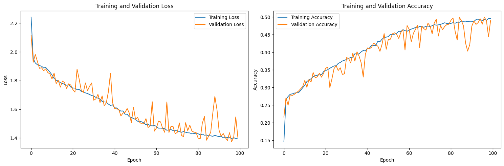
From the plot, we can see that as training goes, both the training and validation loss declines, and when approaching 100 rounds, the rate of loss decrease slows down significantly, indicating that the model is converging.
Q5. Implement a function to evaluate your model on the testing dataset [10 points]#
We want to return two things:
Test accuracy
Confusion matrix on the test set (plot)
Hint: see what we have imported from sklearn and view the documentation. You might find some useful functions.
Provide some analysis as to what you see in terms of performance? Is this surprising? Are there biases towards any specific classes? Why?
pip install scikit-learn
Collecting scikit-learn
Using cached scikit_learn-1.6.1-cp311-cp311-manylinux_2_17_x86_64.manylinux2014_x86_64.whl.metadata (18 kB)
Requirement already satisfied: numpy>=1.19.5 in /opt/conda/lib/python3.11/site-packages (from scikit-learn) (2.2.5)
Collecting scipy>=1.6.0 (from scikit-learn)
Using cached scipy-1.15.2-cp311-cp311-manylinux_2_17_x86_64.manylinux2014_x86_64.whl.metadata (61 kB)
Collecting joblib>=1.2.0 (from scikit-learn)
Using cached joblib-1.4.2-py3-none-any.whl.metadata (5.4 kB)
Collecting threadpoolctl>=3.1.0 (from scikit-learn)
Using cached threadpoolctl-3.6.0-py3-none-any.whl.metadata (13 kB)
Using cached scikit_learn-1.6.1-cp311-cp311-manylinux_2_17_x86_64.manylinux2014_x86_64.whl (13.5 MB)
Using cached joblib-1.4.2-py3-none-any.whl (301 kB)
Using cached scipy-1.15.2-cp311-cp311-manylinux_2_17_x86_64.manylinux2014_x86_64.whl (37.6 MB)
Using cached threadpoolctl-3.6.0-py3-none-any.whl (18 kB)
Installing collected packages: threadpoolctl, scipy, joblib, scikit-learn
Successfully installed joblib-1.4.2 scikit-learn-1.6.1 scipy-1.15.2 threadpoolctl-3.6.0
Note: you may need to restart the kernel to use updated packages.
import sklearn.metrics as metrics
import seaborn as sns
import matplotlib.pyplot as plt
import numpy as np
def evaluate_model(model, loader):
model.eval()
all_preds = []
all_labels = []
with torch.no_grad():
for data in loader:
data = data.to(device)
# Forward pass
logits = model(data.x, data.edge_index, data.batch)
# Get class predictions
preds = logits.argmax(dim=1).cpu().numpy()
labels = data.y.cpu().numpy()
all_preds.append(preds)
all_labels.append(labels)
# Concatenate all predictions and labels
all_preds = np.concatenate(all_preds)
all_labels = np.concatenate(all_labels)
# Calculate confusion matrix
conf_matrix = metrics.confusion_matrix(all_labels, all_preds)
# Calculate accuracy
accuracy = metrics.accuracy_score(all_labels, all_preds)
# Plot confusion matrix
fig, ax = plt.subplots(figsize=(8, 6))
sns.heatmap(conf_matrix, annot=True, fmt="d", cmap="Blues", xticklabels=np.unique(all_labels), yticklabels=np.unique(all_labels))
ax.set_xlabel('Predicted Labels')
ax.set_ylabel('True Labels')
ax.set_title('Confusion Matrix')
plt.show()
return accuracy, conf_matrix
# Evaluate the model on the test set
test_accuracy, conf_matrix = evaluate_model(model, test_loader)
# Print the results
print(f"Test Accuracy: {test_accuracy:.4f}")
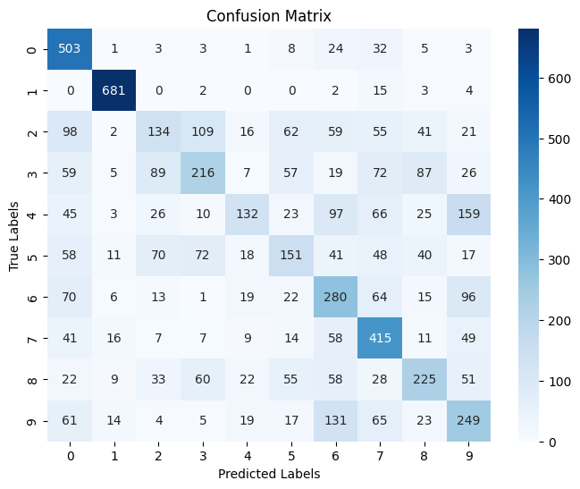
Test Accuracy: 0.4977
Best classified digits:
Digit 1 had the highest recognition rate, with about 0.96 Digit 0 and digit 7 also performed well, with accuracy rates of about 86% and 66% respectively
Worst classified digits:
Digit 4 had the lowest recognition rate, with only about 22% of samples correctly classified Digit 4 and digit 2 also performed poorly, with accuracy rates of about 22% respectively
Common confusion patterns:
Digit 3 was often misclassified as digit 2 Digit 9 was often misclassified as digit 6 There was significant confusion between digits 2 and 3 (in both directions)
Digit shape analysis:
Digit 1 had the most unique shape and was hardly confused with other digits There was more confusion between digits 2, 3, 5, and 8, which do have some similarities in graphic structure Digits 6 and 9 had some confusion, which may be due to their similar shapes after rotation
These results are not surprising because:
Using a graph structure to represent an image will lose some local features and spatial relationships that traditional CNNs can capture Numbers with similar shapes (such as 2 and 3, 4 and 9, 6 and 9) are more difficult to distinguish after conversion to a graph structure Numbers with simple and unique structures (such as 1) are more likely to be correctly recognized
Q6. Class wise accuracy [10 points]#
The confusion matrix gives us a good indication of class wise performance, but might not be the easiest thing to look at. Lets instead provide the accuracy class wise, which is more easily interpetable perhaps.
While we could make this cleaner (i.e., combining the above function with the one below) and reduce computation, the dataset is small and therefore we are not worried. You can reuse some of the above function here, or if you want you can simply combine the two functions.
def class_wise_accuracy(model, loader):
model.eval()
all_preds = []
all_labels = []
with torch.no_grad():
for data in loader:
data = data.to(device)
logits = model(data.x, data.edge_index, data.batch)
preds = logits.argmax(dim=1).cpu().numpy()
labels = data.y.cpu().numpy()
all_preds.append(preds)
all_labels.append(labels)
# Concatenate all predictions and labels
all_preds = np.concatenate(all_preds)
all_labels = np.concatenate(all_labels)
# Calculate class-wise accuracy
class_acc = []
for class_idx in np.unique(all_labels):
# Get indices where the true label is the current class
class_indices = np.where(all_labels == class_idx)[0]
# Calculate accuracy for this class
class_correct = np.sum(all_preds[class_indices] == all_labels[class_indices])
class_accuracy = class_correct / len(class_indices)
class_acc.append(class_accuracy)
return np.array(class_acc)
# Calculate the class-wise accuracy on the test set
test_class_wise_acc = class_wise_accuracy(model, test_loader)
# Print the class-wise accuracy for each class
print("Class-wise accuracy:")
for i, acc in enumerate(test_class_wise_acc):
print(f"Class {i}: {acc:.4f}")
Class-wise accuracy:
Class 0: 0.8628
Class 1: 0.9632
Class 2: 0.2245
Class 3: 0.3391
Class 4: 0.2253
Class 5: 0.2871
Class 6: 0.4778
Class 7: 0.6619
Class 8: 0.3996
Class 9: 0.4235
Q7. Training with positional information of nodes [10 points]#
In previous experiments, we have neglected information that might be very important for our task of classifiying digits - node position.
Modify the training script from above to also utilize this information in the form:
data.x = torch.cat([data.x,data.pos],dim=1)
You will need to think about how the shape of your input has changed with the addition of this new information
Train a new model with this additional information and provide the same metrics as above:
plot_loss()- no changes requiredevaluate_model()- changes required for inputsclass_wise_accuracy()- changes required for inputs
Provide analysis on how this additional information effects the performance of your model. Is this helpful information? Why?
# Modify the dataset to include positional information
def add_positional_info(dataset):
# Create a new list to store modified data
modified_dataset = []
for data in dataset:
# Concatenate the node features (x) with positional information (pos)
data.x = torch.cat([data.x, data.pos], dim=1)
modified_dataset.append(data)
return modified_dataset
# Apply the modification to train, validation, and test datasets
train_dataset_pos = add_positional_info(train_dataset)
val_dataset_pos = add_positional_info(val_dataset)
test_dataset_pos = add_positional_info(test_dataset)
# Create new dataloaders with modified datasets
train_loader_pos = DataLoader(train_dataset_pos, batch_size=batch_size, shuffle=True)
val_loader_pos = DataLoader(val_dataset_pos, batch_size=batch_size, shuffle=False)
test_loader_pos = DataLoader(test_dataset_pos, batch_size=batch_size, shuffle=False)
# Instantiate and train your model with the new input dimension
# The input dimension now includes both features and positional information
sample_pos = train_dataset_pos[0]
input_dim_pos = sample_pos.x.size(1) # Updated input dimension
num_classes = 10
device = torch.device('cuda' if torch.cuda.is_available() else 'cpu')
model_pos = GCN(input_dim=input_dim_pos, num_classes=num_classes).to(device)
model_pos, history_pos = trainer(model_pos, train_loader_pos, val_loader_pos, num_epochs=100, lr=0.001, device=device)
# Plot the training and validation metrics
plot_loss(history_pos)
# Evaluate on test set
test_accuracy_pos, conf_matrix_pos = evaluate_model(model_pos, test_loader_pos)
print(f"Test Accuracy with Positional Information: {test_accuracy_pos:.4f}")
# Calculate class-wise accuracy
test_class_wise_acc_pos = class_wise_accuracy(model_pos, test_loader_pos)
# Print the class-wise accuracy for each class
print("Class-wise accuracy with positional information:")
for i, acc in enumerate(test_class_wise_acc_pos):
print(f"Class {i}: {acc:.4f}")
Training Size: 45000
Validation Size: 9000
=========== Optimizer ==================:
LR: 0.001
num_epochs: 100
Epoch: 1/100
704/704 [==============================] - 5s 8ms/step - loss: 2.2456 - acc:: 0.1481 - val_loss: 2.2055 - val_acc:: 0.1743
Epoch: 2/100
704/704 [==============================] - 5s 8ms/step - loss: 2.1459 - acc:: 0.2017 - val_loss: 2.0927 - val_acc:: 0.2303
Epoch: 3/100
704/704 [==============================] - 5s 8ms/step - loss: 2.0244 - acc:: 0.2526 - val_loss: 1.9930 - val_acc:: 0.2647
Epoch: 4/100
704/704 [==============================] - 5s 8ms/step - loss: 1.9344 - acc:: 0.2847 - val_loss: 1.9126 - val_acc:: 0.2858
Epoch: 5/100
704/704 [==============================] - 5s 8ms/step - loss: 1.8896 - acc:: 0.3034 - val_loss: 1.9055 - val_acc:: 0.2948
Epoch: 6/100
704/704 [==============================] - 6s 8ms/step - loss: 1.8442 - acc:: 0.3205 - val_loss: 1.8253 - val_acc:: 0.3169
Epoch: 7/100
704/704 [==============================] - 5s 8ms/step - loss: 1.7931 - acc:: 0.3402 - val_loss: 1.7473 - val_acc:: 0.3562
Epoch: 8/100
704/704 [==============================] - 5s 7ms/step - loss: 1.7221 - acc:: 0.3705 - val_loss: 1.7213 - val_acc:: 0.3679
Epoch: 9/100
704/704 [==============================] - 5s 8ms/step - loss: 1.6436 - acc:: 0.4080 - val_loss: 1.5874 - val_acc:: 0.4350
Epoch: 10/100
704/704 [==============================] - 5s 8ms/step - loss: 1.5710 - acc:: 0.4391 - val_loss: 1.5268 - val_acc:: 0.4619
Epoch: 11/100
704/704 [==============================] - 5s 8ms/step - loss: 1.4998 - acc:: 0.4697 - val_loss: 1.4784 - val_acc:: 0.4787
Epoch: 12/100
704/704 [==============================] - 5s 7ms/step - loss: 1.4448 - acc:: 0.4894 - val_loss: 1.4978 - val_acc:: 0.4760
Epoch: 13/100
704/704 [==============================] - 5s 7ms/step - loss: 1.4078 - acc:: 0.5004 - val_loss: 1.4294 - val_acc:: 0.4981
Epoch: 14/100
704/704 [==============================] - 5s 7ms/step - loss: 1.3762 - acc:: 0.5134 - val_loss: 1.3833 - val_acc:: 0.5051
Epoch: 15/100
704/704 [==============================] - 5s 7ms/step - loss: 1.3542 - acc:: 0.5196 - val_loss: 1.3609 - val_acc:: 0.5167
Epoch: 16/100
704/704 [==============================] - 5s 8ms/step - loss: 1.3308 - acc:: 0.5289 - val_loss: 1.3878 - val_acc:: 0.4881
Epoch: 17/100
704/704 [==============================] - 5s 8ms/step - loss: 1.3217 - acc:: 0.5342 - val_loss: 1.3191 - val_acc:: 0.5280
Epoch: 18/100
704/704 [==============================] - 6s 8ms/step - loss: 1.3021 - acc:: 0.5404 - val_loss: 1.3447 - val_acc:: 0.5152
Epoch: 19/100
704/704 [==============================] - 5s 8ms/step - loss: 1.2865 - acc:: 0.5453 - val_loss: 1.2747 - val_acc:: 0.5422
Epoch: 20/100
704/704 [==============================] - 6s 8ms/step - loss: 1.2639 - acc:: 0.5520 - val_loss: 1.2581 - val_acc:: 0.5443
Epoch: 21/100
704/704 [==============================] - 6s 8ms/step - loss: 1.2535 - acc:: 0.5569 - val_loss: 1.2799 - val_acc:: 0.5468
Epoch: 22/100
704/704 [==============================] - 6s 8ms/step - loss: 1.2366 - acc:: 0.5636 - val_loss: 1.2865 - val_acc:: 0.5416
Epoch: 23/100
704/704 [==============================] - 5s 8ms/step - loss: 1.2265 - acc:: 0.5661 - val_loss: 1.3078 - val_acc:: 0.5260
Epoch: 24/100
704/704 [==============================] - 5s 8ms/step - loss: 1.2118 - acc:: 0.5712 - val_loss: 1.2372 - val_acc:: 0.5554
Epoch: 25/100
704/704 [==============================] - 5s 8ms/step - loss: 1.1966 - acc:: 0.5773 - val_loss: 1.1988 - val_acc:: 0.5654
Epoch: 26/100
704/704 [==============================] - 5s 7ms/step - loss: 1.1783 - acc:: 0.5848 - val_loss: 1.1795 - val_acc:: 0.5764
Epoch: 27/100
704/704 [==============================] - 5s 7ms/step - loss: 1.1677 - acc:: 0.5882 - val_loss: 1.2605 - val_acc:: 0.5436
Epoch: 28/100
704/704 [==============================] - 5s 7ms/step - loss: 1.1565 - acc:: 0.5938 - val_loss: 1.1847 - val_acc:: 0.5816
Epoch: 29/100
704/704 [==============================] - 6s 8ms/step - loss: 1.1461 - acc:: 0.5963 - val_loss: 1.1603 - val_acc:: 0.5887
Epoch: 30/100
704/704 [==============================] - 5s 8ms/step - loss: 1.1271 - acc:: 0.6033 - val_loss: 1.1418 - val_acc:: 0.6018
Epoch: 31/100
704/704 [==============================] - 5s 8ms/step - loss: 1.1131 - acc:: 0.6108 - val_loss: 1.1329 - val_acc:: 0.5928
Epoch: 32/100
704/704 [==============================] - 5s 7ms/step - loss: 1.1030 - acc:: 0.6133 - val_loss: 1.1025 - val_acc:: 0.6083
Epoch: 33/100
704/704 [==============================] - 5s 8ms/step - loss: 1.0957 - acc:: 0.6155 - val_loss: 1.1189 - val_acc:: 0.6059
Epoch: 34/100
704/704 [==============================] - 5s 7ms/step - loss: 1.0806 - acc:: 0.6207 - val_loss: 1.0960 - val_acc:: 0.6077
Epoch: 35/100
704/704 [==============================] - 5s 7ms/step - loss: 1.0714 - acc:: 0.6257 - val_loss: 1.1209 - val_acc:: 0.6079
Epoch: 36/100
704/704 [==============================] - 5s 7ms/step - loss: 1.0629 - acc:: 0.6287 - val_loss: 1.0836 - val_acc:: 0.6199
Epoch: 37/100
704/704 [==============================] - 5s 7ms/step - loss: 1.0529 - acc:: 0.6321 - val_loss: 1.0594 - val_acc:: 0.6324
Epoch: 38/100
704/704 [==============================] - 5s 8ms/step - loss: 1.0412 - acc:: 0.6358 - val_loss: 1.1300 - val_acc:: 0.5947
Epoch: 39/100
704/704 [==============================] - 5s 8ms/step - loss: 1.0387 - acc:: 0.6350 - val_loss: 1.0889 - val_acc:: 0.6148
Epoch: 40/100
704/704 [==============================] - 5s 8ms/step - loss: 1.0241 - acc:: 0.6433 - val_loss: 1.0744 - val_acc:: 0.6208
Epoch: 41/100
704/704 [==============================] - 6s 8ms/step - loss: 1.0240 - acc:: 0.6434 - val_loss: 1.0493 - val_acc:: 0.6354
Epoch: 42/100
704/704 [==============================] - 5s 8ms/step - loss: 1.0134 - acc:: 0.6476 - val_loss: 1.0664 - val_acc:: 0.6224
Epoch: 43/100
704/704 [==============================] - 5s 7ms/step - loss: 0.9989 - acc:: 0.6509 - val_loss: 1.0615 - val_acc:: 0.6296
Epoch: 44/100
704/704 [==============================] - 5s 7ms/step - loss: 0.9973 - acc:: 0.6523 - val_loss: 1.0072 - val_acc:: 0.6517
Epoch: 45/100
704/704 [==============================] - 5s 8ms/step - loss: 0.9913 - acc:: 0.6568 - val_loss: 1.0423 - val_acc:: 0.6357
Epoch: 46/100
704/704 [==============================] - 5s 8ms/step - loss: 0.9756 - acc:: 0.6606 - val_loss: 1.0587 - val_acc:: 0.6278
Epoch: 47/100
704/704 [==============================] - 6s 8ms/step - loss: 0.9760 - acc:: 0.6627 - val_loss: 1.0187 - val_acc:: 0.6398
Epoch: 48/100
704/704 [==============================] - 5s 7ms/step - loss: 0.9640 - acc:: 0.6651 - val_loss: 0.9849 - val_acc:: 0.6580
Epoch: 49/100
704/704 [==============================] - 5s 7ms/step - loss: 0.9567 - acc:: 0.6684 - val_loss: 0.9811 - val_acc:: 0.6494
Epoch: 50/100
704/704 [==============================] - 5s 8ms/step - loss: 0.9496 - acc:: 0.6700 - val_loss: 1.0411 - val_acc:: 0.6391
Epoch: 51/100
704/704 [==============================] - 6s 8ms/step - loss: 0.9415 - acc:: 0.6740 - val_loss: 0.9303 - val_acc:: 0.6734
Epoch: 52/100
704/704 [==============================] - 6s 8ms/step - loss: 0.9346 - acc:: 0.6773 - val_loss: 0.9365 - val_acc:: 0.6797
Epoch: 53/100
704/704 [==============================] - 5s 8ms/step - loss: 0.9320 - acc:: 0.6767 - val_loss: 0.9307 - val_acc:: 0.6697
Epoch: 54/100
704/704 [==============================] - 5s 8ms/step - loss: 0.9265 - acc:: 0.6783 - val_loss: 0.9518 - val_acc:: 0.6693
Epoch: 55/100
704/704 [==============================] - 5s 8ms/step - loss: 0.9176 - acc:: 0.6829 - val_loss: 0.9084 - val_acc:: 0.6810
Epoch: 56/100
704/704 [==============================] - 5s 8ms/step - loss: 0.9100 - acc:: 0.6867 - val_loss: 0.8990 - val_acc:: 0.6866
Epoch: 57/100
704/704 [==============================] - 5s 8ms/step - loss: 0.9052 - acc:: 0.6869 - val_loss: 0.9487 - val_acc:: 0.6639
Epoch: 58/100
704/704 [==============================] - 5s 7ms/step - loss: 0.8936 - acc:: 0.6933 - val_loss: 0.9100 - val_acc:: 0.6784
Epoch: 59/100
704/704 [==============================] - 5s 7ms/step - loss: 0.8911 - acc:: 0.6917 - val_loss: 0.9238 - val_acc:: 0.6813
Epoch: 60/100
704/704 [==============================] - 5s 8ms/step - loss: 0.8811 - acc:: 0.6959 - val_loss: 0.8914 - val_acc:: 0.6924
Epoch: 61/100
704/704 [==============================] - 5s 8ms/step - loss: 0.8798 - acc:: 0.6950 - val_loss: 0.9289 - val_acc:: 0.6776
Epoch: 62/100
704/704 [==============================] - 5s 8ms/step - loss: 0.8711 - acc:: 0.6996 - val_loss: 0.9262 - val_acc:: 0.6758
Epoch: 63/100
704/704 [==============================] - 6s 8ms/step - loss: 0.8651 - acc:: 0.7022 - val_loss: 0.8518 - val_acc:: 0.7031
Epoch: 64/100
704/704 [==============================] - 6s 8ms/step - loss: 0.8563 - acc:: 0.7064 - val_loss: 0.9183 - val_acc:: 0.6802
Epoch: 65/100
704/704 [==============================] - 5s 8ms/step - loss: 0.8529 - acc:: 0.7075 - val_loss: 0.8567 - val_acc:: 0.7069
Epoch: 66/100
704/704 [==============================] - 5s 8ms/step - loss: 0.8466 - acc:: 0.7082 - val_loss: 0.8844 - val_acc:: 0.6998
Epoch: 67/100
704/704 [==============================] - 5s 8ms/step - loss: 0.8420 - acc:: 0.7103 - val_loss: 0.8804 - val_acc:: 0.6918
Epoch: 68/100
704/704 [==============================] - 5s 8ms/step - loss: 0.8318 - acc:: 0.7133 - val_loss: 0.8701 - val_acc:: 0.6994
Epoch: 69/100
704/704 [==============================] - 6s 8ms/step - loss: 0.8264 - acc:: 0.7168 - val_loss: 0.8814 - val_acc:: 0.6976
Epoch: 70/100
704/704 [==============================] - 5s 8ms/step - loss: 0.8199 - acc:: 0.7205 - val_loss: 0.8067 - val_acc:: 0.7258
Epoch: 71/100
704/704 [==============================] - 6s 8ms/step - loss: 0.8144 - acc:: 0.7203 - val_loss: 0.8319 - val_acc:: 0.7128
Epoch: 72/100
704/704 [==============================] - 6s 8ms/step - loss: 0.8067 - acc:: 0.7246 - val_loss: 0.8337 - val_acc:: 0.7067
Epoch: 73/100
704/704 [==============================] - 5s 8ms/step - loss: 0.8018 - acc:: 0.7264 - val_loss: 0.8229 - val_acc:: 0.7170
Epoch: 74/100
704/704 [==============================] - 5s 8ms/step - loss: 0.7957 - acc:: 0.7255 - val_loss: 0.7913 - val_acc:: 0.7311
Epoch: 75/100
704/704 [==============================] - 5s 8ms/step - loss: 0.7874 - acc:: 0.7314 - val_loss: 0.8755 - val_acc:: 0.6930
Epoch: 76/100
704/704 [==============================] - 5s 8ms/step - loss: 0.7875 - acc:: 0.7325 - val_loss: 0.7684 - val_acc:: 0.7374
Epoch: 77/100
704/704 [==============================] - 6s 8ms/step - loss: 0.7800 - acc:: 0.7339 - val_loss: 0.8223 - val_acc:: 0.7207
Epoch: 78/100
704/704 [==============================] - 5s 8ms/step - loss: 0.7728 - acc:: 0.7362 - val_loss: 0.8014 - val_acc:: 0.7242
Epoch: 79/100
704/704 [==============================] - 5s 8ms/step - loss: 0.7669 - acc:: 0.7397 - val_loss: 0.8161 - val_acc:: 0.7106
Epoch: 80/100
704/704 [==============================] - 5s 8ms/step - loss: 0.7644 - acc:: 0.7392 - val_loss: 0.8121 - val_acc:: 0.7279
Epoch: 81/100
704/704 [==============================] - 5s 8ms/step - loss: 0.7650 - acc:: 0.7380 - val_loss: 0.8268 - val_acc:: 0.7201
Epoch: 82/100
704/704 [==============================] - 5s 8ms/step - loss: 0.7549 - acc:: 0.7418 - val_loss: 0.7437 - val_acc:: 0.7469
Epoch: 83/100
704/704 [==============================] - 5s 8ms/step - loss: 0.7471 - acc:: 0.7459 - val_loss: 0.7798 - val_acc:: 0.7354
Epoch: 84/100
704/704 [==============================] - 5s 8ms/step - loss: 0.7492 - acc:: 0.7429 - val_loss: 0.7743 - val_acc:: 0.7349
Epoch: 85/100
704/704 [==============================] - 5s 8ms/step - loss: 0.7373 - acc:: 0.7480 - val_loss: 0.7589 - val_acc:: 0.7396
Epoch: 86/100
704/704 [==============================] - 5s 8ms/step - loss: 0.7345 - acc:: 0.7502 - val_loss: 0.7713 - val_acc:: 0.7371
Epoch: 87/100
704/704 [==============================] - 5s 7ms/step - loss: 0.7328 - acc:: 0.7510 - val_loss: 0.7457 - val_acc:: 0.7461
Epoch: 88/100
704/704 [==============================] - 5s 7ms/step - loss: 0.7252 - acc:: 0.7529 - val_loss: 0.7244 - val_acc:: 0.7540
Epoch: 89/100
704/704 [==============================] - 5s 7ms/step - loss: 0.7196 - acc:: 0.7565 - val_loss: 0.8181 - val_acc:: 0.7199
Epoch: 90/100
704/704 [==============================] - 5s 8ms/step - loss: 0.7197 - acc:: 0.7572 - val_loss: 0.7419 - val_acc:: 0.7437
Epoch: 91/100
704/704 [==============================] - 5s 7ms/step - loss: 0.7123 - acc:: 0.7569 - val_loss: 0.7265 - val_acc:: 0.7526
Epoch: 92/100
704/704 [==============================] - 5s 7ms/step - loss: 0.7066 - acc:: 0.7604 - val_loss: 0.7010 - val_acc:: 0.7628
Epoch: 93/100
704/704 [==============================] - 5s 8ms/step - loss: 0.7073 - acc:: 0.7606 - val_loss: 0.7332 - val_acc:: 0.7457
Epoch: 94/100
704/704 [==============================] - 5s 7ms/step - loss: 0.6958 - acc:: 0.7655 - val_loss: 0.7139 - val_acc:: 0.7579
Epoch: 95/100
704/704 [==============================] - 5s 7ms/step - loss: 0.6982 - acc:: 0.7624 - val_loss: 0.7793 - val_acc:: 0.7310
Epoch: 96/100
704/704 [==============================] - 5s 8ms/step - loss: 0.6869 - acc:: 0.7669 - val_loss: 0.7184 - val_acc:: 0.7543
Epoch: 97/100
704/704 [==============================] - 5s 8ms/step - loss: 0.6832 - acc:: 0.7689 - val_loss: 0.7667 - val_acc:: 0.7399
Epoch: 98/100
704/704 [==============================] - 5s 7ms/step - loss: 0.6766 - acc:: 0.7705 - val_loss: 0.7038 - val_acc:: 0.7617
Epoch: 99/100
704/704 [==============================] - 5s 7ms/step - loss: 0.6806 - acc:: 0.7668 - val_loss: 0.7043 - val_acc:: 0.7611
Epoch: 100/100
704/704 [==============================] - 5s 7ms/step - loss: 0.6727 - acc:: 0.7717 - val_loss: 0.6770 - val_acc:: 0.7717
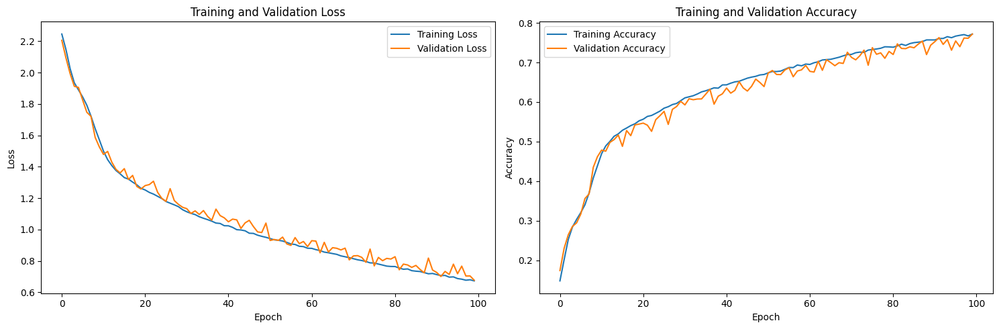
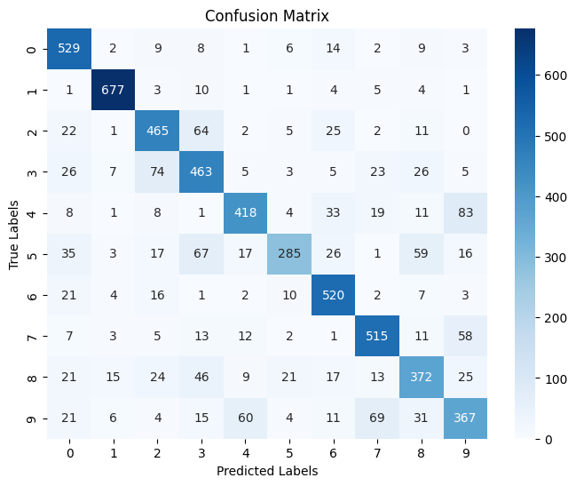
Test Accuracy with Positional Information: 0.7685
Class-wise accuracy with positional information:
Class 0: 0.9074
Class 1: 0.9576
Class 2: 0.7789
Class 3: 0.7268
Class 4: 0.7133
Class 5: 0.5418
Class 6: 0.8874
Class 7: 0.8214
Class 8: 0.6607
Class 9: 0.6241
From the results, we can see that adding node location information has a significant positive impact on model performance: Accuracy has been greatly improved:
Original model test accuracy: 49.77%
Model test accuracy with location information: 76.85%
An increase of about 27 percentage points, which is a huge improvement
The accuracy of all digit categories has been significantly improved：
The recognition rate of digit 1 is as high as 95.76%
Even the category with the lowest recognition rate has been improved to about 54%
Confusion between categories is significantly reduced：
In particular, the confusion between digits 2 and 3 is greatly reduced
Why position information is very important:
Digit recognition is a spatial perception task. The graph structure without position information only retains the node connection relationship and loses the spatial arrangement of pixels, while the position information restores this spatial structure, allowing the model to capture the shape of the number. As an additional feature dimension, position information provides a richer representation for each node. The relative position of the node is crucial for distinguishing numbers with similar shapes (such as 2 and 3, 4 and 9)
Q8. Optimize your model [20 points]#
Lets see how performative you can make your model. You are free to make any design choices you like, as well as changing hyperparameters. Provided detailed summaries of the choices you have made.
class OptimizedGCN(torch.nn.Module):
def __init__(self, input_dim, num_classes, hidden_dim=128, dropout_rate=0.2):
super(OptimizedGCN, self).__init__()
# Increased capacity with larger hidden dimensions
self.conv1 = GCNConv(input_dim, hidden_dim)
self.conv2 = GCNConv(hidden_dim, hidden_dim * 2)
self.conv3 = GCNConv(hidden_dim * 2, hidden_dim * 2)
# Batch normalization for better stability
self.bn1 = torch.nn.BatchNorm1d(hidden_dim)
self.bn2 = torch.nn.BatchNorm1d(hidden_dim * 2)
self.bn3 = torch.nn.BatchNorm1d(hidden_dim * 2)
# Dropout for regularization
self.dropout = torch.nn.Dropout(dropout_rate)
# Linear layers with increased capacity
self.fc1 = nn.Linear(hidden_dim * 2, hidden_dim)
self.fc2 = nn.Linear(hidden_dim, num_classes)
def forward(self, x, edge_index, batch):
# First GCN layer with batch norm and dropout
x = self.conv1(x, edge_index)
x = self.bn1(x)
x = F.relu(x)
x = self.dropout(x)
# Second GCN layer with batch norm and dropout
x = self.conv2(x, edge_index)
x = self.bn2(x)
x = F.relu(x)
x = self.dropout(x)
# Third GCN layer with batch norm
x = self.conv3(x, edge_index)
x = self.bn3(x)
x = F.relu(x)
# Global mean pooling
x = global_mean_pool(x, batch)
# First fully connected layer with dropout
x = self.fc1(x)
x = F.relu(x)
x = self.dropout(x)
# Output layer
x = self.fc2(x)
return x
# Instantiate and train the optimized model
input_dim_opt = sample_pos.x.size(1) # Using the dataset with positional information
hidden_dim = 128
dropout_rate = 0.2
num_classes = 10
device = torch.device('cuda' if torch.cuda.is_available() else 'cpu')
model_opt = OptimizedGCN(
input_dim=input_dim_opt,
num_classes=num_classes,
hidden_dim=hidden_dim,
dropout_rate=dropout_rate
).to(device)
# Use a learning rate scheduler for better convergence
def trainer_with_scheduler(net, train_loader, val_loader, num_epochs=100, lr=5e-3, device='cuda'):
# Setup random seed
torch.manual_seed(8)
torch.cuda.manual_seed(8)
history = {'train_loss':[], 'val_loss':[], 'train_acc':[], 'val_acc':[]}
print("Training Size: {0}".format(len(train_loader.dataset)))
print("Validation Size: {0}".format(len(val_loader.dataset)))
# Create optimizer with weight decay for regularization
optimizer = torch.optim.Adam(net.parameters(), lr=lr, weight_decay=1e-4)
# Learning rate scheduler
scheduler = torch.optim.lr_scheduler.ReduceLROnPlateau(
optimizer, mode='min', factor=0.5, patience=5
)
print('=========== Optimizer ==================:')
print(' LR:', lr)
print(' num_epochs:', num_epochs)
print('')
# Define loss function with label smoothing for better generalization
CCE = torch.nn.CrossEntropyLoss(label_smoothing=0.1)
best_val_acc = 0
for epoch in range(num_epochs):
# Progress bar setup
kbar = pkbar.Kbar(target=len(train_loader), epoch=epoch, num_epochs=num_epochs)
net.train() # Set the model to training mode
running_loss = 0.0
running_acc = 0.0
for i, data in enumerate(train_loader):
data = data.to(device) # Move data to the specified device
optimizer.zero_grad()
# Forward pass
logits = net(data.x, data.edge_index, data.batch)
# Monitor accuracy
pred = logits.argmax(dim=1)
train_acc = pred.eq(data.y).sum().item() / data.num_graphs
# Calculate loss
loss = CCE(logits, data.y)
# Backward pass and optimization
loss.backward()
optimizer.step()
# Update metrics
running_loss += loss.item() * data.num_graphs
running_acc += train_acc * data.num_graphs
kbar.update(i, values=[("loss", loss.item()),("acc:", train_acc)])
# Track training metrics
history['train_loss'].append(running_loss / len(train_loader.dataset))
history['train_acc'].append(running_acc / len(train_loader.dataset))
# Validation phase
net.eval()
val_loss = 0.0
val_acc = 0.0
with torch.no_grad():
for i, data in enumerate(val_loader):
data = data.to(device)
# Forward pass
out = net(data.x, data.edge_index, data.batch)
# Compute validation metrics
loss = CCE(out, data.y)
val_loss += loss.item() * data.num_graphs
pred = out.argmax(dim=1)
correct = pred.eq(data.y).sum().item()
val_acc += correct
# Average validation metrics
val_loss /= len(val_loader.dataset)
val_acc /= len(val_loader.dataset)
# Update learning rate based on validation loss
scheduler.step(val_loss)
# Track validation metrics
history['val_loss'].append(val_loss)
history['val_acc'].append(val_acc)
kbar.add(1, values=[("val_loss", val_loss),("val_acc:", val_acc)])
# Save the best model
if val_acc > best_val_acc:
best_val_acc = val_acc
best_state = net.state_dict().copy()
# Load the best model
net.load_state_dict(best_state)
return net, history
# Train with the enhanced training function
model_opt, history_opt = trainer_with_scheduler(
model_opt,
train_loader_pos,
val_loader_pos,
num_epochs=100,
lr=5e-3,
device=device,
)
# Plot the training and validation metrics
plot_loss(history_opt)
# Evaluate on test set
test_accuracy_opt, conf_matrix_opt = evaluate_model(model_opt, test_loader_pos)
print(f"Test Accuracy with Optimized Model: {test_accuracy_opt:.4f}")
# Calculate class-wise accuracy
test_class_wise_acc_opt = class_wise_accuracy(model_opt, test_loader_pos)
# Print the class-wise accuracy for each class
print("Class-wise accuracy with optimized model:")
for i, acc in enumerate(test_class_wise_acc_opt):
print(f"Class {i}: {acc:.4f}")
Training Size: 45000
Validation Size: 9000
=========== Optimizer ==================:
LR: 0.005
num_epochs: 100
Epoch: 1/100
704/704 [==============================] - 8s 11ms/step - loss: 1.7204 - acc:: 0.4443 - val_loss: 1.6076 - val_acc:: 0.4853
Epoch: 2/100
704/704 [==============================] - 8s 11ms/step - loss: 1.4667 - acc:: 0.5735 - val_loss: 1.6133 - val_acc:: 0.5272
Epoch: 3/100
704/704 [==============================] - 8s 11ms/step - loss: 1.3695 - acc:: 0.6254 - val_loss: 1.5479 - val_acc:: 0.5200
Epoch: 4/100
704/704 [==============================] - 8s 11ms/step - loss: 1.3078 - acc:: 0.6534 - val_loss: 1.4199 - val_acc:: 0.5769
Epoch: 5/100
704/704 [==============================] - 7s 11ms/step - loss: 1.2708 - acc:: 0.6699 - val_loss: 1.3562 - val_acc:: 0.6389
Epoch: 6/100
704/704 [==============================] - 7s 11ms/step - loss: 1.2573 - acc:: 0.6785 - val_loss: 1.1834 - val_acc:: 0.7029
Epoch: 7/100
704/704 [==============================] - 8s 11ms/step - loss: 1.2368 - acc:: 0.6860 - val_loss: 1.3249 - val_acc:: 0.6440
Epoch: 8/100
704/704 [==============================] - 8s 11ms/step - loss: 1.2257 - acc:: 0.6883 - val_loss: 1.3541 - val_acc:: 0.6316
Epoch: 9/100
704/704 [==============================] - 8s 11ms/step - loss: 1.2115 - acc:: 0.6990 - val_loss: 1.3085 - val_acc:: 0.6431
Epoch: 10/100
704/704 [==============================] - 8s 11ms/step - loss: 1.2081 - acc:: 0.7008 - val_loss: 1.4559 - val_acc:: 0.5794
Epoch: 11/100
704/704 [==============================] - 7s 11ms/step - loss: 1.1986 - acc:: 0.7071 - val_loss: 1.7916 - val_acc:: 0.4867
Epoch: 12/100
704/704 [==============================] - 7s 11ms/step - loss: 1.1895 - acc:: 0.7104 - val_loss: 1.1132 - val_acc:: 0.7302
Epoch: 13/100
704/704 [==============================] - 7s 11ms/step - loss: 1.1894 - acc:: 0.7103 - val_loss: 1.1107 - val_acc:: 0.7332
Epoch: 14/100
704/704 [==============================] - 8s 11ms/step - loss: 1.1798 - acc:: 0.7134 - val_loss: 1.3664 - val_acc:: 0.6172
Epoch: 15/100
704/704 [==============================] - 8s 11ms/step - loss: 1.1785 - acc:: 0.7181 - val_loss: 1.2690 - val_acc:: 0.6618
Epoch: 16/100
704/704 [==============================] - 8s 11ms/step - loss: 1.1738 - acc:: 0.7178 - val_loss: 1.1324 - val_acc:: 0.7196
Epoch: 17/100
704/704 [==============================] - 8s 11ms/step - loss: 1.1678 - acc:: 0.7204 - val_loss: 1.2379 - val_acc:: 0.6792
Epoch: 18/100
704/704 [==============================] - 8s 11ms/step - loss: 1.1698 - acc:: 0.7194 - val_loss: 1.1875 - val_acc:: 0.7040
Epoch: 19/100
704/704 [==============================] - 8s 11ms/step - loss: 1.1678 - acc:: 0.7196 - val_loss: 1.3124 - val_acc:: 0.6431
Epoch: 20/100
704/704 [==============================] - 8s 11ms/step - loss: 1.1155 - acc:: 0.7437 - val_loss: 1.0684 - val_acc:: 0.7583
Epoch: 21/100
704/704 [==============================] - 8s 11ms/step - loss: 1.1067 - acc:: 0.7479 - val_loss: 1.1404 - val_acc:: 0.7267
Epoch: 22/100
704/704 [==============================] - 8s 11ms/step - loss: 1.1062 - acc:: 0.7504 - val_loss: 1.0293 - val_acc:: 0.7727
Epoch: 23/100
704/704 [==============================] - 8s 11ms/step - loss: 1.0978 - acc:: 0.7540 - val_loss: 1.0950 - val_acc:: 0.7444
Epoch: 24/100
704/704 [==============================] - 8s 11ms/step - loss: 1.0962 - acc:: 0.7520 - val_loss: 1.2239 - val_acc:: 0.6791
Epoch: 25/100
704/704 [==============================] - 8s 11ms/step - loss: 1.0946 - acc:: 0.7528 - val_loss: 1.0643 - val_acc:: 0.7517
Epoch: 26/100
704/704 [==============================] - 8s 11ms/step - loss: 1.0903 - acc:: 0.7557 - val_loss: 0.9830 - val_acc:: 0.7921
Epoch: 27/100
704/704 [==============================] - 7s 11ms/step - loss: 1.0921 - acc:: 0.7553 - val_loss: 0.9813 - val_acc:: 0.8014
Epoch: 28/100
704/704 [==============================] - 7s 11ms/step - loss: 1.0824 - acc:: 0.7576 - val_loss: 0.9965 - val_acc:: 0.7893
Epoch: 29/100
704/704 [==============================] - 8s 11ms/step - loss: 1.0809 - acc:: 0.7614 - val_loss: 1.0719 - val_acc:: 0.7546
Epoch: 30/100
704/704 [==============================] - 8s 11ms/step - loss: 1.0843 - acc:: 0.7577 - val_loss: 1.0433 - val_acc:: 0.7631
Epoch: 31/100
704/704 [==============================] - 8s 11ms/step - loss: 1.0850 - acc:: 0.7568 - val_loss: 1.0304 - val_acc:: 0.7760
Epoch: 32/100
704/704 [==============================] - 8s 11ms/step - loss: 1.0758 - acc:: 0.7631 - val_loss: 1.0133 - val_acc:: 0.7784
Epoch: 33/100
704/704 [==============================] - 7s 11ms/step - loss: 1.0790 - acc:: 0.7614 - val_loss: 1.0524 - val_acc:: 0.7567
Epoch: 34/100
704/704 [==============================] - 7s 11ms/step - loss: 1.0417 - acc:: 0.7770 - val_loss: 0.9702 - val_acc:: 0.8013
Epoch: 35/100
704/704 [==============================] - 8s 11ms/step - loss: 1.0361 - acc:: 0.7821 - val_loss: 0.9741 - val_acc:: 0.7958
Epoch: 36/100
704/704 [==============================] - 8s 11ms/step - loss: 1.0327 - acc:: 0.7821 - val_loss: 0.9514 - val_acc:: 0.8110
Epoch: 37/100
704/704 [==============================] - 8s 11ms/step - loss: 1.0329 - acc:: 0.7816 - val_loss: 1.0161 - val_acc:: 0.7738
Epoch: 38/100
704/704 [==============================] - 8s 11ms/step - loss: 1.0325 - acc:: 0.7831 - val_loss: 0.9370 - val_acc:: 0.8188
Epoch: 39/100
704/704 [==============================] - 8s 11ms/step - loss: 1.0288 - acc:: 0.7835 - val_loss: 0.9211 - val_acc:: 0.8261
Epoch: 40/100
704/704 [==============================] - 8s 11ms/step - loss: 1.0239 - acc:: 0.7860 - val_loss: 0.9237 - val_acc:: 0.8237
Epoch: 41/100
704/704 [==============================] - 8s 11ms/step - loss: 1.0252 - acc:: 0.7857 - val_loss: 0.9398 - val_acc:: 0.8090
Epoch: 42/100
704/704 [==============================] - 8s 11ms/step - loss: 1.0213 - acc:: 0.7860 - val_loss: 0.9870 - val_acc:: 0.7940
Epoch: 43/100
704/704 [==============================] - 8s 11ms/step - loss: 1.0201 - acc:: 0.7900 - val_loss: 0.9288 - val_acc:: 0.8220
Epoch: 44/100
704/704 [==============================] - 8s 11ms/step - loss: 1.0208 - acc:: 0.7869 - val_loss: 1.0023 - val_acc:: 0.7862
Epoch: 45/100
704/704 [==============================] - 8s 11ms/step - loss: 1.0163 - acc:: 0.7890 - val_loss: 0.9857 - val_acc:: 0.7906
Epoch: 46/100
704/704 [==============================] - 8s 11ms/step - loss: 0.9975 - acc:: 0.7982 - val_loss: 0.8992 - val_acc:: 0.8343
Epoch: 47/100
704/704 [==============================] - 8s 11ms/step - loss: 0.9909 - acc:: 0.8003 - val_loss: 0.8901 - val_acc:: 0.8369
Epoch: 48/100
704/704 [==============================] - 8s 11ms/step - loss: 0.9909 - acc:: 0.8019 - val_loss: 0.8977 - val_acc:: 0.8361
Epoch: 49/100
704/704 [==============================] - 8s 11ms/step - loss: 0.9872 - acc:: 0.8029 - val_loss: 0.8973 - val_acc:: 0.8297
Epoch: 50/100
704/704 [==============================] - 8s 11ms/step - loss: 0.9854 - acc:: 0.8024 - val_loss: 0.8896 - val_acc:: 0.8412
Epoch: 51/100
704/704 [==============================] - 8s 11ms/step - loss: 0.9808 - acc:: 0.8062 - val_loss: 0.8780 - val_acc:: 0.8412
Epoch: 52/100
704/704 [==============================] - 7s 11ms/step - loss: 0.9867 - acc:: 0.8024 - val_loss: 0.9006 - val_acc:: 0.8297
Epoch: 53/100
704/704 [==============================] - 8s 11ms/step - loss: 0.9795 - acc:: 0.8065 - val_loss: 0.8834 - val_acc:: 0.8400
Epoch: 54/100
704/704 [==============================] - 8s 11ms/step - loss: 0.9789 - acc:: 0.8071 - val_loss: 0.8826 - val_acc:: 0.8432
Epoch: 55/100
704/704 [==============================] - 8s 11ms/step - loss: 0.9793 - acc:: 0.8071 - val_loss: 0.8896 - val_acc:: 0.8372
Epoch: 56/100
704/704 [==============================] - 8s 11ms/step - loss: 0.9805 - acc:: 0.8053 - val_loss: 0.8842 - val_acc:: 0.8391
Epoch: 57/100
704/704 [==============================] - 8s 11ms/step - loss: 0.9776 - acc:: 0.8048 - val_loss: 0.8784 - val_acc:: 0.8453
Epoch: 58/100
704/704 [==============================] - 8s 11ms/step - loss: 0.9640 - acc:: 0.8136 - val_loss: 0.8651 - val_acc:: 0.8477
Epoch: 59/100
704/704 [==============================] - 8s 11ms/step - loss: 0.9635 - acc:: 0.8133 - val_loss: 0.8617 - val_acc:: 0.8481
Epoch: 60/100
704/704 [==============================] - 8s 11ms/step - loss: 0.9598 - acc:: 0.8137 - val_loss: 0.8667 - val_acc:: 0.8491
Epoch: 61/100
704/704 [==============================] - 8s 11ms/step - loss: 0.9589 - acc:: 0.8148 - val_loss: 0.8705 - val_acc:: 0.8464
Epoch: 62/100
704/704 [==============================] - 8s 11ms/step - loss: 0.9602 - acc:: 0.8152 - val_loss: 0.8563 - val_acc:: 0.8524
Epoch: 63/100
704/704 [==============================] - 8s 11ms/step - loss: 0.9603 - acc:: 0.8153 - val_loss: 0.8620 - val_acc:: 0.8484
Epoch: 64/100
704/704 [==============================] - 8s 11ms/step - loss: 0.9555 - acc:: 0.8162 - val_loss: 0.8681 - val_acc:: 0.8488
Epoch: 65/100
704/704 [==============================] - 8s 11ms/step - loss: 0.9601 - acc:: 0.8145 - val_loss: 0.8770 - val_acc:: 0.8423
Epoch: 66/100
704/704 [==============================] - 8s 11ms/step - loss: 0.9509 - acc:: 0.8183 - val_loss: 0.8751 - val_acc:: 0.8457
Epoch: 67/100
704/704 [==============================] - 8s 11ms/step - loss: 0.9577 - acc:: 0.8165 - val_loss: 0.8573 - val_acc:: 0.8501
Epoch: 68/100
704/704 [==============================] - 8s 11ms/step - loss: 0.9502 - acc:: 0.8198 - val_loss: 0.8514 - val_acc:: 0.8537
Epoch: 69/100
704/704 [==============================] - 8s 11ms/step - loss: 0.9530 - acc:: 0.8189 - val_loss: 0.8513 - val_acc:: 0.8544
Epoch: 70/100
704/704 [==============================] - 8s 11ms/step - loss: 0.9529 - acc:: 0.8194 - val_loss: 0.8538 - val_acc:: 0.8530
Epoch: 71/100
704/704 [==============================] - 8s 11ms/step - loss: 0.9507 - acc:: 0.8185 - val_loss: 0.8562 - val_acc:: 0.8510
Epoch: 72/100
704/704 [==============================] - 8s 11ms/step - loss: 0.9492 - acc:: 0.8200 - val_loss: 0.8588 - val_acc:: 0.8507
Epoch: 73/100
704/704 [==============================] - 8s 11ms/step - loss: 0.9474 - acc:: 0.8204 - val_loss: 0.8537 - val_acc:: 0.8540
Epoch: 74/100
704/704 [==============================] - 8s 11ms/step - loss: 0.9487 - acc:: 0.8197 - val_loss: 0.8599 - val_acc:: 0.8486
Epoch: 75/100
704/704 [==============================] - 8s 11ms/step - loss: 0.9486 - acc:: 0.8199 - val_loss: 0.8547 - val_acc:: 0.8536
Epoch: 76/100
704/704 [==============================] - 8s 11ms/step - loss: 0.9414 - acc:: 0.8214 - val_loss: 0.8503 - val_acc:: 0.8561
Epoch: 77/100
704/704 [==============================] - 8s 11ms/step - loss: 0.9363 - acc:: 0.8251 - val_loss: 0.8454 - val_acc:: 0.8562
Epoch: 78/100
704/704 [==============================] - 7s 11ms/step - loss: 0.9363 - acc:: 0.8245 - val_loss: 0.8442 - val_acc:: 0.8598
Epoch: 79/100
704/704 [==============================] - 8s 11ms/step - loss: 0.9353 - acc:: 0.8251 - val_loss: 0.8438 - val_acc:: 0.8581
Epoch: 80/100
704/704 [==============================] - 8s 11ms/step - loss: 0.9362 - acc:: 0.8254 - val_loss: 0.8409 - val_acc:: 0.8601
Epoch: 81/100
704/704 [==============================] - 8s 11ms/step - loss: 0.9340 - acc:: 0.8259 - val_loss: 0.8458 - val_acc:: 0.8550
Epoch: 82/100
704/704 [==============================] - 8s 11ms/step - loss: 0.9339 - acc:: 0.8261 - val_loss: 0.8431 - val_acc:: 0.8608
Epoch: 83/100
704/704 [==============================] - 8s 11ms/step - loss: 0.9380 - acc:: 0.8252 - val_loss: 0.8436 - val_acc:: 0.8578
Epoch: 84/100
704/704 [==============================] - 8s 11ms/step - loss: 0.9348 - acc:: 0.8259 - val_loss: 0.8383 - val_acc:: 0.8622
Epoch: 85/100
704/704 [==============================] - 8s 11ms/step - loss: 0.9330 - acc:: 0.8276 - val_loss: 0.8425 - val_acc:: 0.8608
Epoch: 86/100
704/704 [==============================] - 8s 11ms/step - loss: 0.9356 - acc:: 0.8239 - val_loss: 0.8521 - val_acc:: 0.8530
Epoch: 87/100
704/704 [==============================] - 8s 11ms/step - loss: 0.9372 - acc:: 0.8235 - val_loss: 0.8451 - val_acc:: 0.8582
Epoch: 88/100
704/704 [==============================] - 8s 11ms/step - loss: 0.9347 - acc:: 0.8260 - val_loss: 0.8438 - val_acc:: 0.8576
Epoch: 89/100
704/704 [==============================] - 8s 11ms/step - loss: 0.9339 - acc:: 0.8260 - val_loss: 0.8452 - val_acc:: 0.8579
Epoch: 90/100
704/704 [==============================] - 7s 11ms/step - loss: 0.9318 - acc:: 0.8263 - val_loss: 0.8397 - val_acc:: 0.8617
Epoch: 91/100
704/704 [==============================] - 8s 11ms/step - loss: 0.9322 - acc:: 0.8258 - val_loss: 0.8363 - val_acc:: 0.8608
Epoch: 92/100
704/704 [==============================] - 8s 11ms/step - loss: 0.9281 - acc:: 0.8281 - val_loss: 0.8346 - val_acc:: 0.8630
Epoch: 93/100
704/704 [==============================] - 8s 11ms/step - loss: 0.9254 - acc:: 0.8287 - val_loss: 0.8403 - val_acc:: 0.8591
Epoch: 94/100
704/704 [==============================] - 8s 11ms/step - loss: 0.9281 - acc:: 0.8280 - val_loss: 0.8386 - val_acc:: 0.8612
Epoch: 95/100
704/704 [==============================] - 8s 11ms/step - loss: 0.9248 - acc:: 0.8289 - val_loss: 0.8393 - val_acc:: 0.8601
Epoch: 96/100
704/704 [==============================] - 8s 11ms/step - loss: 0.9266 - acc:: 0.8305 - val_loss: 0.8409 - val_acc:: 0.8586
Epoch: 97/100
704/704 [==============================] - 7s 11ms/step - loss: 0.9254 - acc:: 0.8287 - val_loss: 0.8343 - val_acc:: 0.8607
Epoch: 98/100
704/704 [==============================] - 7s 11ms/step - loss: 0.9242 - acc:: 0.8289 - val_loss: 0.8329 - val_acc:: 0.8620
Epoch: 99/100
704/704 [==============================] - 7s 11ms/step - loss: 0.9272 - acc:: 0.8291 - val_loss: 0.8353 - val_acc:: 0.8643
Epoch: 100/100
704/704 [==============================] - 8s 11ms/step - loss: 0.9242 - acc:: 0.8287 - val_loss: 0.8461 - val_acc:: 0.8567
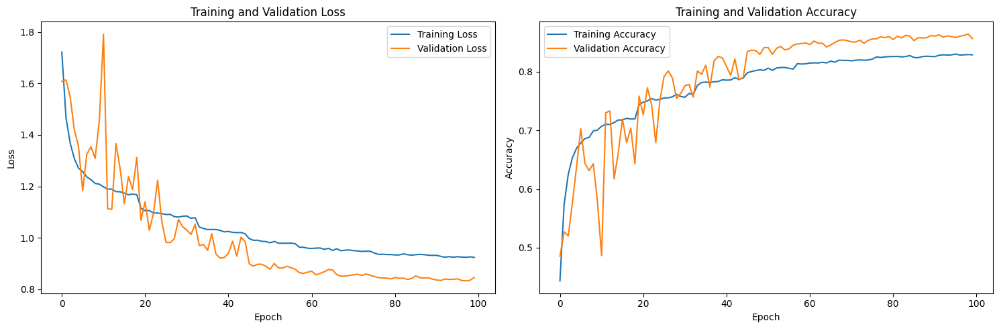
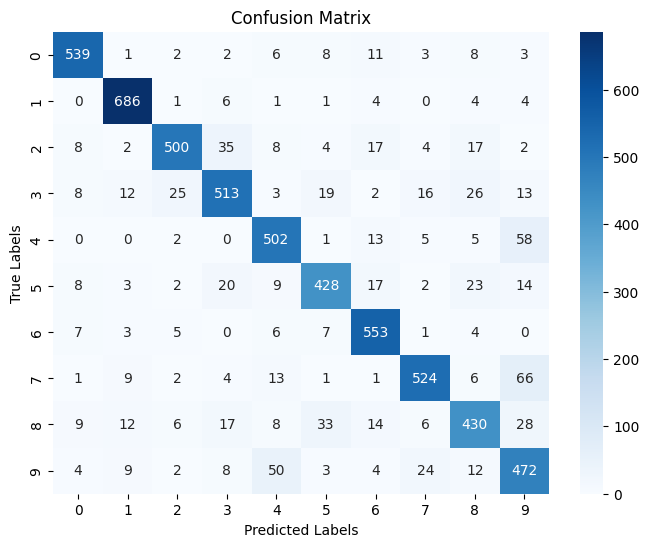
Test Accuracy with Optimized Model: 0.8578
Class-wise accuracy with optimized model:
Class 0: 0.9245
Class 1: 0.9703
Class 2: 0.8375
Class 3: 0.8053
Class 4: 0.8567
Class 5: 0.8137
Class 6: 0.9437
Class 7: 0.8357
Class 8: 0.7638
Class 9: 0.8027
Bonus Question:#
Implement a CNN design of your choice and compare performance. Are graph structures the optimal way of representing the data?
For those interested, you can find the SOTA MNIST models here: https://paperswithcode.com/sota/image-classification-on-mnist
import torch
import torch.nn as nn
import torch.optim as optim
import torch.nn.functional as F
from torchvision import datasets, transforms
from torch.utils.data import DataLoader
import matplotlib.pyplot as plt
import numpy as np
import sklearn.metrics as metrics
import seaborn as sns
# Define the CNN model
class CNN(nn.Module):
def __init__(self, num_classes=10):
super(CNN, self).__init__()
# Convolutional layers
self.conv1 = nn.Conv2d(1, 32, kernel_size=3, stride=1, padding=1)
self.conv2 = nn.Conv2d(32, 64, kernel_size=3, stride=1, padding=1)
self.conv3 = nn.Conv2d(64, 128, kernel_size=3, stride=1, padding=1)
# Pooling layer
self.pool = nn.MaxPool2d(kernel_size=2, stride=2)
# Batch normalization
self.bn1 = nn.BatchNorm2d(32)
self.bn2 = nn.BatchNorm2d(64)
self.bn3 = nn.BatchNorm2d(128)
# Dropout
self.dropout = nn.Dropout(0.25)
# Fully connected layers
self.fc1 = nn.Linear(128 * 3 * 3, 512)
self.fc2 = nn.Linear(512, num_classes)
def forward(self, x):
# First convolutional block
x = self.pool(F.relu(self.bn1(self.conv1(x))))
# Second convolutional block
x = self.pool(F.relu(self.bn2(self.conv2(x))))
# Third convolutional block
x = self.pool(F.relu(self.bn3(self.conv3(x))))
# Flatten
x = x.view(-1, 128 * 3 * 3)
# Fully connected layers
x = F.relu(self.fc1(x))
x = self.dropout(x)
x = self.fc2(x)
return x
# Load the standard MNIST dataset
transform = transforms.Compose([
transforms.ToTensor(),
transforms.Normalize((0.1307,), (0.3081,))
])
# Use /tmp directory which should be writable
mnist_train = datasets.MNIST('/tmp/data', train=True, download=True, transform=transform)
mnist_test = datasets.MNIST('/tmp/data', train=False, download=True, transform=transform)
# Split training data into train and validation
train_size = int(0.85 * len(mnist_train))
val_size = len(mnist_train) - train_size
mnist_train, mnist_val = torch.utils.data.random_split(mnist_train, [train_size, val_size])
# Create dataloaders
train_loader_cnn = DataLoader(mnist_train, batch_size=64, shuffle=True)
val_loader_cnn = DataLoader(mnist_val, batch_size=64, shuffle=False)
test_loader_cnn = DataLoader(mnist_test, batch_size=64, shuffle=False)
# Define the model, loss function, and optimizer
device = torch.device('cuda' if torch.cuda.is_available() else 'cpu')
model_cnn = CNN().to(device)
criterion = nn.CrossEntropyLoss()
optimizer = optim.Adam(model_cnn.parameters(), lr=0.001)
# Training function for CNN
def train_cnn(model, train_loader, val_loader, epochs=10, device='cuda'):
history = {'train_loss': [], 'val_loss': [], 'train_acc': [], 'val_acc': []}
for epoch in range(epochs):
# Training phase
model.train()
train_loss = 0
train_correct = 0
for batch_idx, (data, target) in enumerate(train_loader):
data, target = data.to(device), target.to(device)
optimizer.zero_grad()
output = model(data)
loss = criterion(output, target)
loss.backward()
optimizer.step()
train_loss += loss.item() * len(data)
pred = output.argmax(dim=1, keepdim=True)
train_correct += pred.eq(target.view_as(pred)).sum().item()
train_loss /= len(train_loader.dataset)
train_acc = train_correct / len(train_loader.dataset)
# Validation phase
model.eval()
val_loss = 0
val_correct = 0
with torch.no_grad():
for data, target in val_loader:
data, target = data.to(device), target.to(device)
output = model(data)
val_loss += criterion(output, target).item() * len(data)
pred = output.argmax(dim=1, keepdim=True)
val_correct += pred.eq(target.view_as(pred)).sum().item()
val_loss /= len(val_loader.dataset)
val_acc = val_correct / len(val_loader.dataset)
history['train_loss'].append(train_loss)
history['val_loss'].append(val_loss)
history['train_acc'].append(train_acc)
history['val_acc'].append(val_acc)
print(f'Epoch {epoch+1}/{epochs}, Train Loss: {train_loss:.4f}, Train Acc: {train_acc:.4f}, Val Loss: {val_loss:.4f}, Val Acc: {val_acc:.4f}')
return history
# Train the CNN model
cnn_history = train_cnn(model_cnn, train_loader_cnn, val_loader_cnn, epochs=10, device=device)
# Plot the CNN training history
def plot_cnn_history(history):
fig, (ax1, ax2) = plt.subplots(1, 2, figsize=(15, 5))
# Plot losses
ax1.plot(history['train_loss'], label='Training Loss')
ax1.plot(history['val_loss'], label='Validation Loss')
ax1.set_xlabel('Epoch')
ax1.set_ylabel('Loss')
ax1.set_title('CNN: Training and Validation Loss')
ax1.legend()
# Plot accuracies
ax2.plot(history['train_acc'], label='Training Accuracy')
ax2.plot(history['val_acc'], label='Validation Accuracy')
ax2.set_xlabel('Epoch')
ax2.set_ylabel('Accuracy')
ax2.set_title('CNN: Training and Validation Accuracy')
ax2.legend()
plt.tight_layout()
plt.show()
plot_cnn_history(cnn_history)
# Evaluate the CNN model on test set
def evaluate_cnn(model, test_loader, device):
model.eval()
test_loss = 0
correct = 0
all_preds = []
all_targets = []
with torch.no_grad():
for data, target in test_loader:
data, target = data.to(device), target.to(device)
output = model(data)
test_loss += criterion(output, target).item() * len(data)
pred = output.argmax(dim=1, keepdim=True)
correct += pred.eq(target.view_as(pred)).sum().item()
all_preds.extend(pred.squeeze().cpu().numpy())
all_targets.extend(target.cpu().numpy())
test_loss /= len(test_loader.dataset)
test_acc = correct / len(test_loader.dataset)
print(f'Test Accuracy: {test_acc:.4f}')
# Calculate confusion matrix
conf_matrix = metrics.confusion_matrix(all_targets, all_preds)
# Plot confusion matrix
plt.figure(figsize=(10, 8))
sns.heatmap(conf_matrix, annot=True, fmt="d", cmap="Blues",
xticklabels=range(10), yticklabels=range(10))
plt.xlabel('Predicted Labels')
plt.ylabel('True Labels')
plt.title('CNN Confusion Matrix')
plt.show()
# Calculate class-wise accuracy
class_accuracies = []
for i in range(10):
class_indices = [j for j, x in enumerate(all_targets) if x == i]
if class_indices:
class_correct = sum(all_preds[j] == all_targets[j] for j in class_indices)
class_accuracies.append(class_correct / len(class_indices))
else:
class_accuracies.append(0)
print("Class-wise accuracy:")
for i, acc in enumerate(class_accuracies):
print(f"Class {i}: {acc:.4f}")
return test_acc, conf_matrix, class_accuracies
# Evaluate the CNN model
cnn_test_acc, cnn_conf_matrix, cnn_class_acc = evaluate_cnn(model_cnn, test_loader_cnn, device)
100%|██████████| 9.91M/9.91M [00:00<00:00, 77.5MB/s]
100%|██████████| 28.9k/28.9k [00:00<00:00, 4.24MB/s]
100%|██████████| 1.65M/1.65M [00:00<00:00, 34.2MB/s]
100%|██████████| 4.54k/4.54k [00:00<00:00, 8.54MB/s]
Epoch 1/10, Train Loss: 0.1312, Train Acc: 0.9593, Val Loss: 0.0639, Val Acc: 0.9784
Epoch 2/10, Train Loss: 0.0458, Train Acc: 0.9855, Val Loss: 0.0429, Val Acc: 0.9866
Epoch 3/10, Train Loss: 0.0323, Train Acc: 0.9898, Val Loss: 0.0553, Val Acc: 0.9826
Epoch 4/10, Train Loss: 0.0262, Train Acc: 0.9914, Val Loss: 0.0336, Val Acc: 0.9908
Epoch 5/10, Train Loss: 0.0226, Train Acc: 0.9927, Val Loss: 0.0559, Val Acc: 0.9844
Epoch 6/10, Train Loss: 0.0172, Train Acc: 0.9943, Val Loss: 0.0422, Val Acc: 0.9899
Epoch 7/10, Train Loss: 0.0137, Train Acc: 0.9957, Val Loss: 0.0484, Val Acc: 0.9886
Epoch 8/10, Train Loss: 0.0136, Train Acc: 0.9955, Val Loss: 0.0409, Val Acc: 0.9886
Epoch 9/10, Train Loss: 0.0113, Train Acc: 0.9960, Val Loss: 0.0377, Val Acc: 0.9910
Epoch 10/10, Train Loss: 0.0109, Train Acc: 0.9964, Val Loss: 0.0342, Val Acc: 0.9924
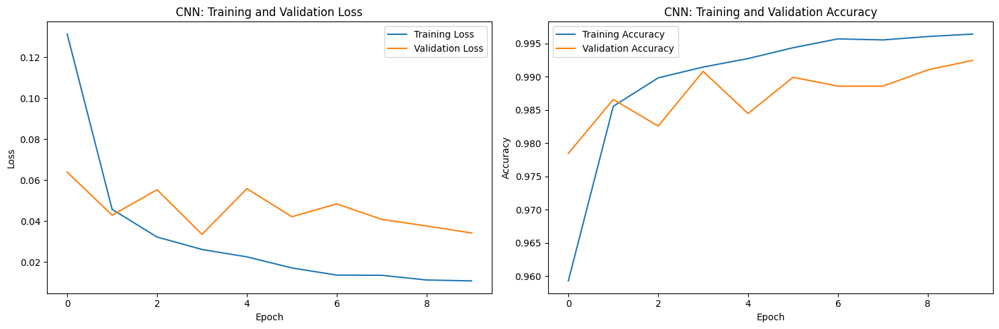
Test Accuracy: 0.9928
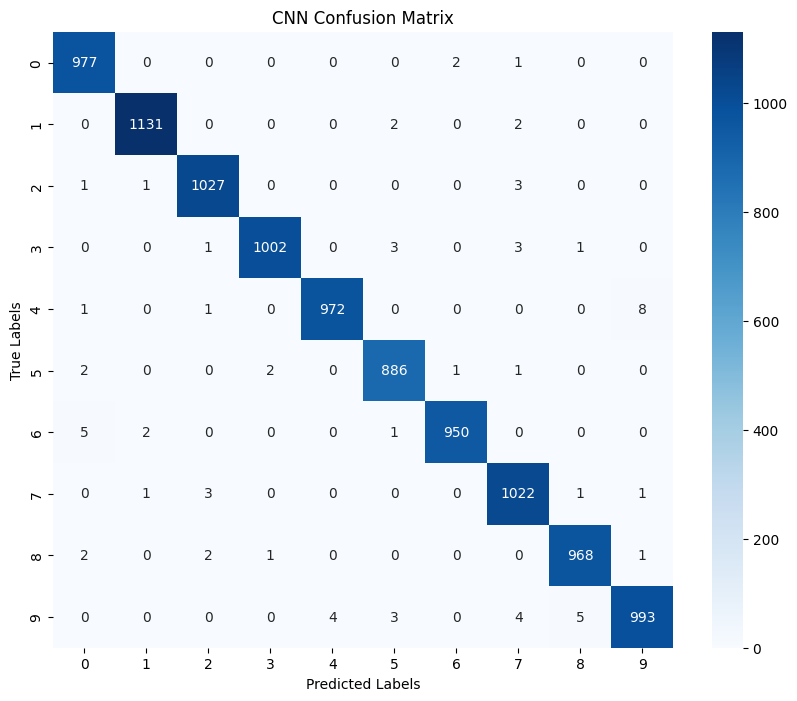
Class-wise accuracy:
Class 0: 0.9969
Class 1: 0.9965
Class 2: 0.9952
Class 3: 0.9921
Class 4: 0.9898
Class 5: 0.9933
Class 6: 0.9916
Class 7: 0.9942
Class 8: 0.9938
Class 9: 0.9841
Analysis: CNN vs GCN
CNNs are highly effective for image classification tasks like MNIST because:
They can capture spatial hierarchies in the data through convolutional layers
They preserve the 2D structure of the images
They have proven to be highly efficient for image recognition tasks
GCNs represent the data differently:
They work on graph structures rather than grid-like data
In the MNIST dataset, pixels are converted to nodes in a graph
This representation may lose some spatial information unless position is explicitly included
Conclusion:
While GCNs can perform well on MNIST data when properly structured with positional information, traditional CNNs are more suitable for this particular task as they capture the 2D structure of images. However, GCNs excel in applications where the data has an inherent graph structure, such as molecular data, social networks etc.